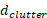
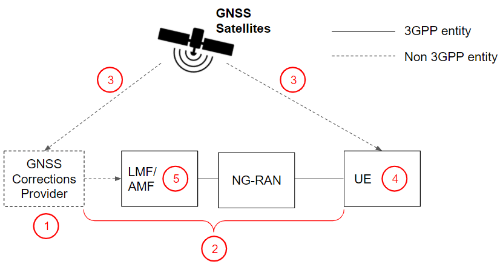

Technical Specification Group Radio Access Network;
Study on NR Positioning Enhancements;
(Release 17)
The present document has been developed within the 3rd
Generation Partnership Project (3GPP TM) and may be further
elaborated for the purposes of 3GPP.
The present document has not been subject to any approval process by the
3GPP Organizational Partners and shall not be implemented.
This Specification is provided for future development work within 3GPP
only. The Organizational Partners accept no liability for any use of
this Specification.
Specifications and Reports for implementation of the 3GPP TM
system should be obtained via the 3GPP Organizational Partners'
Publications Offices.
3GPP
Postal address
3GPP support office address
650 Route des Lucioles - Sophia Antipolis
Valbonne - FRANCE
Tel.: +33 4 92 94 42 00 Fax: +33 4 93 65 47 16
Internet
http://www.3gpp.org
Copyright
Notification
No part may be reproduced except as authorized by written
permission.
The copyright and the foregoing restriction extend to reproduction in
all media.
UMTS™ is a Trade Mark of ETSI registered for the benefit of its
members
3GPP™ is a Trade Mark of ETSI registered for the benefit of its
Members and of the 3GPP Organizational Partners
LTE™ is a Trade Mark of ETSI registered for the benefit of its Members
and of the 3GPP Organizational Partners
GSM® and the GSM logo are registered and owned by the GSM
Association
This Technical Report has been produced by the 3rd Generation
Partnership Project (3GPP).
The contents of the present document are subject to continuing work
within the TSG and may change following formal TSG approval. Should the
TSG modify the contents of the present document, it will be re-released
by the TSG with an identifying change of release date and an increase in
version number as follows:
Version x.y.z
where:
x the first digit:
1 presented to TSG for information;
2 presented to TSG for approval;
3 or greater indicates TSG approved document under change
control.
y the second digit is incremented for all changes of substance, i.e.
technical enhancements, corrections, updates, etc.
z the third digit is incremented when editorial only changes have
been incorporated in the document.
In the present document, modal verbs have the following meanings:
shall indicates a mandatory requirement to do
something
shall not indicates an interdiction (prohibition) to
do something
The constructions "shall" and "shall not" are confined to the context
of normative provisions, and do not appear in Technical Reports.
The constructions "must" and "must not" are not used as substitutes
for "shall" and "shall not". Their use is avoided insofar as possible,
and they are not used in a normative context except in a direct citation
from an external, referenced, non-3GPP document, or so as to maintain
continuity of style when extending or modifying the provisions of such a
referenced document.
should indicates a recommendation to do
something
should not indicates a recommendation not to do
something
may indicates permission to do something
need not indicates permission not to do
something
The construction "may not" is ambiguous and is not used in normative
elements. The unambiguous constructions "might not" or "shall not" are
used instead, depending upon the meaning intended.
can indicates that something is possible
cannot indicates that something is impossible
The constructions "can" and "cannot" are not substitutes for "may"
and "need not".
will indicates that something is certain or expected
to happen as a result of action taken by an agency the behaviour of
which is outside the scope of the present document
will not indicates that something is certain or
expected not to happen as a result of action taken by an agency the
behaviour of which is outside the scope of the present document
might indicates a likelihood that something will
happen as a result of action taken by some agency the behaviour of which
is outside the scope of the present document
might not indicates a likelihood that something will
not happen as a result of action taken by some agency the behaviour of
which is outside the scope of the present document
In addition:
is (or any other verb in the indicative mood)
indicates a statement of fact
is not (or any other negative verb in the indicative
mood) indicates a statement of fact
The constructions "is" and "is not" do not indicate requirements.
1 Scope
The present document captures the findings of the study item "Study
on NR positioning enhancements" [2]. The purpose of this technical
report is to document the requirements, additional scenarios,
evaluations and technical proposals treated during the study and provide
a way forward toward enhancements to NR positioning in TSG RAN WGs.
2 References
The following documents contain provisions which, through reference
in this text, constitute provisions of the present document.
- References are either specific (identified by date of publication,
edition number, version number, etc.) or non‑specific.
- For a specific reference, subsequent revisions do not apply.
- For a non-specific reference, the latest version applies. In the
case of a reference to a 3GPP document (including a GSM document), a
non-specific reference implicitly refers to the latest version of that
document in the same Release as the present document.
[1] 3GPP TR 21.905: "Vocabulary for 3GPP Specifications".
[2] RP-193237: "new SID on NR Positioning Enhancements".
[3] 3GPP TR 38.855: "Study on NR Positioning (Release 16)".
[4] R1-2009433 Evaluation results for Rel-16 positioning and Rel-17
enhancement Huawei, HiSilicon
[5] R1-2007665 Evaluation of NR positioning performance vivo
[6] R1-2007720 Evaluation of achievable positioning accuracy BUPT
[7] R1-2007754 Evaluation of achievable accuracy and latency ZTE
[8] R1-2007859 Discussion of evaluation of NR positioning performance
CATT
[9] R1-2007908 NLOS Identification and Mitigation FUTUREWEI
[10] R1-2009390 Update of Evaluation Results for NR Positioning
Performance in I-IoT Scenarios Intel Corporation
[11] R1-2007997 NR Positioning Latency Evaluations Lenovo, Motorola
Mobility
[12] R1-2008225 Evaluation of NR positioning in IIOT scenario
OPPO
[13] R1-2009555 Results on evaluation of achievable positioning
accuracy and latency Nokia, Nokia Shanghai Bell
[14] R1-2009502 Discussion on Performance evaluation of Rel-17
positioning Sony
[15] R1-2008416 Discussions on evaluation of achievable positioning
accuracy and latency for NR positioning LG Electronics
[16] R1-2008489 Evaluation of achievable positioning latency
InterDigital, Inc.
[30] 3GPP TR 22.872: "Study on positioning use cases".
[31] R2-2006541, TP for Study on Positioning Integrity and
Reliability, Swift Navigation, Deutsche Telekom, u-blox, Ericsson,
Mitsubishi Electric, Intel Corporation, CATT, UIC.
[32] Zhu, N., Marais, J., Betaille, D., Berbineau, M., "GNSS Position
Integrity in Urban Environments: A Review of Literature", IEEE
Transactions on Intelligent Transportation Systems, Vol. 19, No. 9, Sep
2018.
[33] European Space Agency, "Integrity", Navipedia, 2018,
<https://gssc.esa.int/navipedia/index.php/Integrity>.
[34] Reid, T., Houts, S., Cammarata, R., Mills, G., Agarwal, S.,
Vora, A., Pandey, G., "Localization Requirements for Autonomous
Vehicles," SAE International Journal of Connected and Automated
Vehicles, Vol. 2, No. 3, pp. 173–190, Sep 2019.
[35] GSA-MKD-RD-UREQ-250283, "Report on Road User Needs and
Requirements: Outcome of the European GNSS' User Consultation Platform",
Issue/Rev: 2.0, 2019.
[36] GSA-MKD-RL-UREQ-250286, "Report on Rail User Needs and
Requirements: Outcome of the European GNSS' User Consultation Platform",
Issue/Rev: 2.0, 2019.
[37] 5GAA, "White Paper – C-V2X Use Cases Methodology, Examples and
Service Level Requirements, 2019.
[38] Global Positioning System Wide Area Augmentation System (WAAS)
Performance Standard, Department of Transportation USA, Federal Aviation
Authority, Edition 1, October 2008.
[39] International Civil Aviation Organization, "Annex 10 to the
Convention on International Civil Aviation, Aeronautical
Telecommunications: International Standards and Recommended Practices",
2006.
[40] RTCA DO-178C, "Software Considerations in Airborne Systems and
Equipment Certification," 2011.
[41] DO-229D, RTCA, "RTCA DO-229D Minimum Operational Performance
Standards for Global Positioning System/Satellite-Based Augmentation
System Airborne Equipment," 2013.
[42] SAE J3016, "Taxonomy and Definitions for Terms Related to
On-Road Motor Vehicle Automated Driving Systems", SAE International,
2018.
[43] European GNSS Agency, "GNSS User Technology Report issue 3",
2020.
[44] Air Force Research Laboratory, "IS-AGT-100 Chips Message Robust
Authentication (Chimera)", 2019.
[45] 3GPP TR 22.804, "Study on Communication for Automation in
Vertical Domains".
[46] Working Group C (WG-C), "EU-U.S. Cooperation on Satellite
Navigation", ARAIM Technical Subgroup, Interim Report, Issue 1, December
2012.
[47] 5G ACIA White Paper, "5G for Automation in Industry: Primary use
cases, functions and service requirements", July 2019.
[48] Elliott D. Kaplan, Christopher J. Hegarty, "Understanding
GPS/GNSS Principles and Applications" Third Edition, Artech House,
2017.
[49] R2-2010075, Methodologies for network-assisted and UE-assisted
integrity, Ericsson.
[50] R2-2006674, Discussion on error sources, threat models,
occurrence rates and failure modes, CATT.
[53] R2-2101437, Text Proposal to methodologies for GNSS position
integrity, ESA.
3 Definitions of
terms, symbols and abbreviations
3.1 Terms
For the purposes of the present document, the terms given in
TR 21.905 [1] and the following apply. A term defined in the present
document takes precedence over the definition of the same term, if any,
in TR 21.905 [1].
Positioning Integrity: A measure of the trust in the
accuracy of the position-related data provided by the positioning system
and the ability to provide timely and valid warnings to the LCS client
when the positioning system does not fulfil the condition for intended
operation.
Integrity Availability: The integrity availability
is the percentage of time that the PL is below the required AL.
Feared Event: Feared Events are considered to be all
possible events (e.g., of natural, man-made, systemic or operational
nature) that can cause the computed position to deviate from the true
position, regardless of whether a specific fault can be identified in
one of the positioning systems or not.
Target Integrity Risk (TIR): The probability that
the positioning error exceeds the Alert Limit (AL) without warning the
user within the required Time-to-Alert (TTA).
NOTE: The TIR is usually defined as a probability rate per some time
unit (e.g., per hour, per second or per independent sample).
Alert Limit (AL): The maximum allowable positioning
error such that the positioning system is available for the intended
application. If the positioning error is beyond the AL, the positioning
system should be declared unavailable for the intended application to
prevent loss of positioning integrity.
NOTE: When the AL bounds the positioning error in the horizontal
plane or on the vertical axis then it is called Horizontal Alert Limit
(HAL) or Vertical Alert Limit (VAL) respectively.
Time-to-Alert (TTA): The maximum allowable elapsed
time from when the positioning error exceeds the Alert Limit (AL) until
the function providing positioning integrity annunciates a corresponding
alert.
Misleading Information (MI): An MI event occurs
when, the positioning system being declared available, the positioning
error exceeds the PL.
Hazardous Misleading Information (HMI): An HMI event
occurs when, the positioning system being declared available, the
positioning error exceeds the AL without annunciating an alert within
the TTA.
Integrity Event: An Integrity Event occurs when the
positioning system outputs HMI.
3.2 Symbols
For the purposes of the present document, the following symbols
apply:
<symbol> <Explanation>
3.3 Abbreviations
For the purposes of the present document, the abbreviations given in
TR 21.905 [1] and the following apply. An abbreviation defined in the
present document takes precedence over the definition of the same
abbreviation, if any, in TR 21.905 [1].
AoA Angle of Arrival
AL Alert Limit
DL-AoD Downlink Angle-of-Departure
DL-PRS Downlink Positioning Reference Signal
DL-TDOA Downlink Time Difference of Arrival
E-CID Enhanced Cell-ID
HAL Horizontal Alert Limit
HMI Hazardously Misleading Information
HPL Horizontal Protection Level
LCS LoCation Services
LMF Location Management Function
LPP LTE Positioning ProtocolMG Measurement Gap
MI Misleading Information
MO-LR Mobile Originated Location Request
MT-LR Mobile Terminated Location Request
Multi-RTT Multi-Round Trip Time
NRPPa NR Positioning Protocol A
PE Positioning Error
PL Protection Level
PRS Positioning Reference Signal
RSRP Reference Signal Received Power
RSTD Reference Signal Time Difference
SRS Sounding Reference Signal
TIR Target Integrity Risk
TTA Time-to-Alert
TRP Transmission-Reception Point
UL-AoA Uplink Angle of Arrival
UL-RTOA Uplink Relative Time of Arrival
UL-TDOA Uplink Time Difference of Arrival
VAL Vertical Alert Limit
VPL Vertical Protection Level
4 General
description of NR positioning enhancements
3GPP NR radio-technology is uniquely positioned to provide added
value in terms of enhanced location capabilities. The operation in low
and high frequency bands (i.e. below and above 6GHz) and utilization of
massive antenna arrays provides additional degrees of freedom to
substantially improve the positioning accuracy. The possibility to use
wide signal bandwidth in low and especially in high bands brings new
performance bounds for user location for well-known positioning
techniques, utilizing timing measurements to locate UE. The recent
advances in massive antenna systems can provide additional degrees of
freedom to enable more accurate user location by exploiting spatial and
angular domains of propagation channel in combination with time
measurements.
3GPP Rel-16 has specified various location technologies to support
regulatory as well as commercial use cases. The target horizontal
positioning requirements for commercial use cases studied in Rel-16 were
<3 m (80%) for indoor scenarios and <10 m (80%) for outdoor
scenarios (TR 38.855[3]). The 5G service requirements specified in TS
22.261 [24] include High Accuracy Positioning requirements, which are
characterized by ambitious system requirements for positioning accuracy
in many verticals. For example, on the factory floor, it is important to
locate assets and moving objects such as forklifts, or parts to be
assembled. Similar needs exist in transportation and logistics, for
example.
To address the higher accuracy location requirements resulting from
new applications and industry verticals for 5G, a Rel-17 Study Item of
"Study on NR Positioning Enhancements" was approved by TSG RAN [2][25].
The study item covers the enhancements and solutions necessary to
support the high accuracy (horizontal and vertical), low latency,
network efficiency (scalability, RS overhead, etc.), and device
efficiency (power consumption, complexity, etc.) requirements for
commercial uses cases (incl. general commercial use cases and
specifically IIoT use cases).
This technical report documents the following accomplishments
obtained during the study:
- the target performance requirements for RAT dependent solutions for
Rel-17 for both general commercial use cases and IIoT use cases;
- the additional scenarios and channel models for evaluating NR
positioning enhancements;
- the NR positioning enhancements candidates for improving accuracy,
reducing latency, and improving network and device efficiency for
Rel-17;
- evaluation of the achievable positioning performance, including the
performance analysis of Rel-16 positioning solutions, the performance
analysis, the efficiency analysis, and the observations obtained from
the investigations for Rel-17 NR positioning enhancements;
- the identified NR impacts for normative work for Rel-17.
5
Target requirements for NR positioning enhancements in Rel-17
5.1 Target requirements
In Rel-17 target positioning requirements for commercial use cases
are defined as follows:
- Horizontal position accuracy (< 1 m) for 90% of UEs
- Vertical position accuracy (< 3 m) for 90% of UEs
- End-to-end latency for position estimation of UE (< 100 ms)
- Physical layer latency for position estimation of UE (< 10
ms)
In Rel-17 target positioning requirements for IIoT use cases are
defined as follows:
- Horizontal position accuracy (< 0.2 m) for 90% of UEs
- Vertical position accuracy (< 1 m) for 90% of UEs
- End-to-end latency for position estimation of UE (< 100ms, in
the order of 10 ms is desired)
- Physical layer latency for position estimation of UE (<10ms)
Note 1: Target positioning requirements may not necessarily be
reached for all scenarios and deployments
Note 2: For some scenarios the requirement for Horizontal position
accuracy can be relaxed to < 0.5 m in IIoT use cases.
Note 3: All positioning techniques may not achieve the target
positioning requirements over all scenarios
5.2 Performance evaluation
metrics
For evaluating performance of NR positioning technologies, the
following metrics apply. The following percentiles of positioning error
are analyzed: 50%, 67%, 80%, 90%.
5.2.1 Horizontal accuracy
Horizontal accuracy is the difference between the calculated
horizontal position and the actual horizontal position of a UE.
5.2.2 Vertical accuracy
Vertical accuracy is the difference between the calculated vertical
position and the actual vertical position of a UE.
5.2.3 Other metrics
5.2.3.1 Latency
5.2.3.1.1 Physical layer Latency
Latency includes higher layer and physical layer latency. Physical
layer latency for DL only, UL only, DL+UL positioning solutions for
UE-based and UE-assisted approaches are separately studied
The physical layer latency start- and end-time are defined for each
positioning method in table 5.2.3.1-1
Table 5.2.3.1-1: Definition of physical layer latency start- and
end-time
Method
Start
End
UE assisted DL-only & DL-ECID & Multi-RTT
Transmission of the PDSCH from the gNB carrying the LPP Request
Location Information message
Successful decoding of the PUSCH carrying the LPP Provide Location
Information message
UL-only method & UL ECID & Multi-RTT
Reception by the gNB of the NRPPa measurement request message
The transmission by the gNB of the NRPPa measurement response
message
UE-based
- Alt. 1: transmission of the PUSCH carrying the MG Request from
the UE.
- Alt. 2: Transmission of the PDSCH from the gNB carrying the LPP
message containing the assistance data
- Alt. 3: Start of the Reception of DL PRS
Successful decoding of the PUSCH at gNB carrying the LPP Provide
Location Information message if applicable, otherwise Calculation of
Location Estimate at the UE
5.2.3.1.2 Higher layer Latency
Higher layer latencies include processing delays of the various
involved nodes (UE, gNB, AMF, LMF, etc) and signalling delays between
nodes.
The latency assumptions for the various components (UE, gNB, AMF and
LMF) used in higher layer latency analysis are defined in table
5.2.3.1.2-1.
Table 5.2.3.1.2-1: Latency Components
Label
Latency
[ms]
Description
Processing Latencies
TUEProc-RRCReconf
10
RRC Reconfiguration processing
TUEProc-RRCDLInfo
5
RRC DL information transfer
TUEProc-RRCULInfo
2-5
RRC UL information transfer
TUEProc-RRCLocationMeas
2-5
RRC Location Measurement Indication
TUEProc-LPPCapab
10-20
LPP Provide Capabilities
TUEProc-LPPAssi
10
LPP Provide Assistance Data
TUEProc-LPPLocationRe
5
LPP Request/Provide Location
Information
TUEProc-MAC-SRSAct
1-3
MAC-CE SRS Activation/Deactivation
TgNBProc-RRC
3
RRC Processing
TgNBProc-NRPPa
3
NRPPa Processing
TgNBProc-NAS/LPP
3
NAS/LPP Processing
TAMFProc
3
AMF Processing
TLMFProc
3
LMF Processing
Signalling Propagation
Delays between Nodes
TUE-gNB
0-0.5
TgNB-AMF
3-10
TAMF-LMF
1-10
TAMF-GMLC
3-10
Positioning Measurement
Latencies
TLMF-Calc
2-30
Position Calculation latency
TDL-Meas
88.5
Estimated minimum DL PRS measurement
time in Rel.16 can be 88.5ms depending on DL PRS configuration
settings.
TUL-Meas
12
SRS for positioning measurement time of
12 ms can be achieved under certain SRS for positioning configuration
settings depending on the frame configuration.
Note: On delays related to node processing and Network Signalling
interfaces, the following should also be considered:
- There can be network latency variations depending on the deployment
distance between gNB and AMF, and depending on the backhaul type;
- One or more network latency components may not be present in
certain specific deployments, e.g. where logical nodes such as gNB and
AMF are co-located.
5.2.3.2 Network efficiency
PRS/SRS resource utilization is the metric used to evaluate network
efficiency.
5.2.3.3 Device efficiency
The UE power consumption models developed in TR38.840 can be
considered as the starting point for defining the UE power consumption
model for the evaluation for NR positioning. For evaluations, it is up
to each source to detail their methodology (including the power model)
for evaluation.
6
Additional scenarios and channel models for NR positioning
enhancements
The scenario parameters common to all the scenarios in the study are
detailed in table 6-1. Additionally, blockage model is not considered.
For evaluations including UE mobility, the spatial consistency procedure
defined in TR 38.901 is taken into consideration.
The evaluation methodology does not define any baseline reference
signals. Configurations of DL PRS and SRS supported by Rel-16
specifications are used for evaluation of the achievable performance
based on Rel-16 positioning technologies.
Table 6-1: Common scenario parameters applicable for all
scenarios
FR1 Specific Values
FR2 Specific Values
Carrier frequency, GHz
3.5GHz
28GHz
Bandwidth, MHz
100MHz
400MHz
Subcarrier spacing, kHz
30kHz for 100MHz
120kHz
gNB model parameters
gNB noise figure, dB
5dB
7dB
UE model parameters
UE noise figure, dB
9dB – Note 1
13dB – Note 1
UE max. TX power, dBm
23dBm – Note 1
23dBm – Note 1
EIRP should not exceed 43 dBm.
UE antenna configuration
Panel model 1 – Note 1
Mg = 1, Ng = 1, P = 2, dH = 0.5λ,
(M, N, P, Mg, Ng) = (1, 2, 2, 1, 1)
Baseline:
Multi-panel Configuration 1 and Panel Configuration a – Note 1
- The antenna elements of the same polarization of the same panel is
virtualized into one TXRU
Optional:
4-panels UE:
- The antenna elements of the same polarization of the same panel is
virtualized into one TXRU
UE antenna radiation pattern
Omni, 0dBi
Antenna model according to Table 6.1.1-2 in TR 38.855
PHY/link level abstraction
Explicit simulation of all links, individual parameters
estimation is applied. Companies to provide description of applied
algorithms for estimation of signal location parameters.
Network synchronization
The network synchronization error, per UE dropping,
is defined as a truncated Gaussian distribution of (T1 ns) rms values
between an eNB and a timing reference source which is assumed to have
perfect timing, subject to a largest timing difference of T2 ns, where
T2 = 2*T1
– That is, the range of timing errors is [-T2, T2]
(Optional) The UE/gNB RX and TX timing error, in
FR1/FR2, can be modeled as a truncated Gaussian distribution with zero
mean and standard deviation of T1 ns, with truncation of the
distribution to the [-T2, T2] range, and with T2=2*T1:
- T1: X ns for gNB and Y ns for UE
- X and Y are up to sources
- Note: RX and TX timing errors are generated per panel
independently
Apply the timing errors as follows:
- For each UE drop,
- For each panel (in case of multiple panels)
- Draw a random sample for the Tx error according to [-2*Y,2*Y] and
another random sample for the Rx error according to the same [-2*Y,2*Y]
distribution.
- For each gNB
- For each panel (in case of multiple panels)
- Draw a random sample for the Tx error according to [-2*X,2*X] and
another random sample for the Rx error according to the same [-2*X,2*X]
distribution.
- Any additional Time varying aspects of the timing errors, if
simulated, can be left up to each company to report.
- For UE evaluation assumptions in FR2, it is assumed that the UE can
receive or transmit at most from one panel at a time with a panel
activation delay of 0ms.
Note 1: According to TR 38.802
Note 2: According to TR 38.901
6.1 IIoT use cases
For evaluating baseline performance, the following scenarios (with
various options/configurations) are defined for RAT-dependent
positioning techniques for the NR positioning enhancements study
- Scenario 1. InF-SH for FR1 and FR2
- Scenario 2. InF-DH for FR1 and FR2
In the evaluation of all scenarios, the absolute-time-of arrival
model defined in TR 38.901 is considered, without modification.
Parameters specific to scenario 1and 2 are detailed in table 6.1-1
Table 6.1-1: Parameters common to InF scenarios
FR1 Specific Values
FR2 Specific Values
Channel model
InF-SH, InF-DH
InF-SH, InF-DH
Layout
Hall size
InF-SH:
(baseline) 300x150 m
(optional) 120x60 m
InF-DH:
(baseline) 120x60 m
(optional) 300x150 m
BS locations
18 BSs on a square lattice with spacing D, located
D/2 from the walls.
Uniformly distributed over the horizontal evaluation
area for obtaining the CDF values for positioning accuracy, The
evaluation area should be
- (baseline) at least the convex hull of the horizontal BS
deployment.
- (optional) It can also be the whole hall area if the CDF values for
positioning accuracy is obtained from whole hall area.
UE antenna height
Baseline: 1.5m
(Optional): uniformly distributed within [0.5, X2]m, where X2 = 2m
for scenario 1(InF-SH) and X2= for scenario 2
(InF-DH)
UE mobility
3km/h
Min gNB-UE distance (2D), m
0m
gNB antenna height
Baseline: 8m
(Optional): two fixed heights, either {4, 8} m, or {max(4,),
8}.
Clutter parameters: {density , height ,size }
Low clutter density:
{20%, 2m, 10m}
High clutter density:
- Baseline): {40%, 2m, 2m} for fixed UE antenna height and gNB
antenna height
- (Optional): {40%, 3m, 5m}
- (Optional): {60%, 6m, 2m}
Note 1: According to Table A.2.1-7 in TR 38.802
6.2 General commercial use
cases
For general commercial use cases, Rel-16 scenarios and channel models
in TR 38.855 are reused. For the absolute time of arrival modelling in
IOO, UMa, Umi, sources may provide the details of their model, if
any.
7 Studied NR positioning
enhancements
The following enhancements have been considered during this
study:
- Partial staggering and non-staggering RE mapping of SRS for
positioning with different combinations of comb-factors and symbol
lengths, including the methods/signalling for addressing potential
time-domain aliasing due to the partial/non-staggering RE mapping.
- Semi-persistent and a-periodic transmission and reception of DL
PRS
- Semi-persistent means MAC-CE triggered
- Aperiodic would correspond to DCI-triggered
- On-demand transmission and reception of DL PRS
- On-demand corresponds to the UE-initiated or network-initiated
request of PRS and/or SRS, i.e. UE or LMF
request/suggesting/recommending specific PRS pattern, ON/OFF,
periodicity, BW, etc.
- Multipath mitigation techniques including but not limited to the
following:
- The applicable scenarios and performance benefits of multipath
mitigation techniques
- The methods/measurement/signaling for the LOS/NLOS detection and
identification
- The measurements for supporting the multipath
mitigation/utilization
- The procedure and signaling for supporting the multipath
mitigation/utilization
- Implementation-based solutions (e.g., outlier rejection) without
the need of any additional specified
method/measurements/procedures/signaling.
- Note: The above study applies to DL only, UL only, DL+UL
positioning solutions for UE-based and UE-assisted positioning.
- NR positioning for UEs in RRC_IDLE state and UEs in RRC_INACTIVE
state, including the benefits on latency, network/UE efficiency and UE
power consumption
- For reducing NR positioning latency, more efficient signaling &
procedures enabling a device to request and report positioning
information, which may include, but not limited to, the following
aspects:
- DL PRS/SRS configuration, activation or triggering.
- The request for positioning information (the assistance data,
etc.).
- The report of positioning information (the measurement report,
etc.).
- Note: It is not within RAN1 scope to analyze positioning
architecture enhancements to enable such more efficient signaling &
procedures.
- Note: RAN1 does not make any assumptions on whether the LCS
architecture specified in TS 23.273 is enhanced or not.
- Simultaneous transmission by the UE and reception by the gNB of the
SRS for positioning across multiple CCs and multiple slots,
including
- The scenarios and performance benefits of the enhancement
- The impact of channel spacing, TA and timing offset, phase offset,
frequency error, and power imbalance across slots or CCs to the
positioning performance for intra-band contiguous/ non-contiguous and
inter-band scenarios
- Scenario, benefits, and methods for improving the accuracy of the
UL AoA and DL-AoD methods for both UE-based and network-based (including
UE-assisted) positioning
- Scenario, benefits, methods and signaling for improving positioning
accuracy in the presence of the UE Rx/Tx transmission delays, and/or gNB
Rx/Tx transmission delays for UE-based and network-based (including
UE-assisted) positioning.
- Aggregating multiple DL positioning frequency layers of the same or
different bands for improving positioning performance for both
intra-band and inter-band scenarios
- The scenarios and performance benefits of aggregating multiple DL
positioning frequency layers
- The impact of channel spacing, timing offset, phase offset,
frequency error, and power imbalance among CCs to the positioning
performance for intra-band contiguous/ non-contiguous and inter-band
scenarios
- UE complexity considerations
- UE positioning procedures under the scope of RRC_IDLE/RRC_INACTIVE
positioning, i.e. performed when the UE is in RRC_IDLE/RRC_INACTIVE.
- NAS-transported positioning signalling
- LCS messages defined in Clause 4.1.2 for location services in TS
24.571 [29]
- LPP signaling for positioning (e.g., Capability transfer,
Assistance data transfer, Location information transfer)
- NRPPa
- E-CID information transfer (UE-associated)
- Positioning information transfer (UE-associated)
- Measurement information transfer (non-UE-associated)
- Uu Signaling and procedure
- RRC signaling for positioning (e.g., posSRS configuration)
- MAC procedure/L1 signaling (e.g., activation/deactivation for
semi-persistent/aperiodic posSRS)
- Transmission of UL-PRS and reception of DL-PRS
- Reception for assistance information broadcast
8 Performance
evaluations for Rel-17 targets
8.1
Performance analysis of Rel-16 positioning solutions
This clause presents the observations made by sources regarding
Rel-16 positioning solutions. Detailed results can be found in annex
C.1.
8.1.1 Positioning accuracy
analysis
8.1.1.1 Observations from source
[4]
Table 8.1.1.1-1 captures observations based on NR positioning
evaluations results for horizontal location error for baseline
scenarios.
Table 8.1.1.1-2 captures observations based on NR positioning
evaluations results for horizontal location error for modified DH and 3D
positioning.
Table 8.1.1.1-3 captures observations based on NR positioning
evaluations results for horizontal location error for UE/gNB calibration
error.
Table 8.1.1.1-4 captures observations based on NR positioning
evaluations results for vertical location error for modified DH and 3D
positioning.
Case 4, InF FR1 SH ISD50, 100MHz, RANSAC, DL TDOA, ,
Unequal gNBs heights, Variable UE heights
Convex UEs
1.89m
(Optional) All UEs
2.63m
Case 4, InF FR1 SH ISD50, 100MHz, RANSAC, Unequal gNBs
heights, DL TDOA, Unequal gNBs heights, Fixed UE heights
Convex UEs
0.9m
(Optional) All UEs
1.34m
Vertical (Across All UEs)
Beam Pair
90%
Case 6
InF-SH FR2 3d mRTT
Earliest
0.084
Case 8
InF-SH FR2 3d mRTT
Earliest
0.041
8.1.1.11 Observations from source
[18]
Table 8.1.1.11-1: Rel.16 NR positioning – horizontal accuracy
performance summary from [18]
Simulation case
(Horizontal Error)
Accuracy achieved @[90]%
Case 1- config ID 445
(FR1-InF DH)
≥10
Case 3- config ID 1112
(FR1-UMi)
3.24
Case 2- config ID 1011
(FR1-UMi with ATOA)
≥10
8.1.2 Physical layer
latency analysis for Rel-16
8.1.2.1 Observations from source
[4]
Summary of latency performance analysis is provided in Table
8.1.2.1-1.
Table 8.1.2.1-1: NR Rel.16 positioning – latency performance summary
[4]
Description
Evaluation Case
L1 Latency, ms
Commercial requirements [100]ms are met -Yes/No
- If no, provide performance gaps
IIoT requirements of [10ms] are met - Yes/No.
If no, provide performance gaps
IIoT requirements of [100]ms are met - Yes/No.
If no, provide performance gaps
Case L1, DL-TDOA/DL-AoD/Multi-RTT w/ Gap
request and PRS periodicity 20ms
51.5-66ms (1 samp.)
111.5-126.5ms (4 samp. CSSF = 1)
171.5-186ms (4 samp. CSSF = 2)
Yes (1 samp.)
>=11.5ms (4 samp. CSSF = 1)
>=71.5ms (4 samp. CSSF = 2)
>=41.5ms (1 samp.)
>=101.5ms (4 samp. CSSF = 1)
>=161.5ms (4 samp. CSSF = 2)
Yes (1 samp.)
>=11.5ms (4 samp. CSSF = 1)
>=71.5ms (4 samp. CSSF = 2)
Case L2, DL-TDOA/DL-AoD/Multi-RTT w/o Gap
request and PRS periodicity 160ms
171.5-178.5ms (1 samp.)
651.5-658.5ms (4 samp. CSSF = 1)
No (1 samp.)
No (4 samp. CSSF = 1)
No (1 samp.)
No (4 samp. CSSF = 1)
No (1 samp.)
No (4 samp. CSSF = 1)
Case L3, UL-TDOA/UL-AoA
6.5-26ms (1 samp.)
66.5-86.5ms (4 samp)
Yes (1 samp.)
Yes (4 samp.)
Yes/No (1 samp.)
>=56.5ms (4 samp.)
Yes (1 samp.)
Yes (4 samp.)
Case L4, DL E-CID
8.5-15ms
Yes
Yes/No
Yes
Case L5, UL E-CID
6-26ms
Yes
Yes/No
Yes
Case L6, UE-based DL-TDOA/DL-AoD w/ gap
request t and PRS periodicity 20ms
51-58.5ms (1 samp.)
Yes
>=41ms
Yes
8.1.2.2 Observations from source
[7]
Summary of latency performance analysis is provided in Table
8.1.2.2-1.
Table 8.1.2.2-1: NR Rel.16 positioning – latency performance summary
[7]
Description
Evaluation Case
L1 Latency, ms
Case PHY-L1, UE-A, DL-TDOA, FR1, FDD
106.23
Case PHY-L1, UE-A, DL-TDOA, FR2, FDD
667.87
Case PHY-L2, UE-B, DL-TDOA, FR1, FDD
106.30
Case PHY-L2, UE-B, DL-TDOA, FR2, FDD
667.82
Case PHY-L3, UE-A, DL-ECID, FR1,FDD
10.43
Case PHY-L3, UE-A, DL-ECID, FR2, FDD
10.64
8.1.2.3 Observations from source
[8]
Summary of latency performance analysis is provided in Table
8.1.2.3-1.
Table 8.1.2.3-1: NR Rel.16 positioning - latency performance summary
[8]
Description
Evaluation Case
L1 Latency, ms
Commercial requirements [100]ms are met -Yes/No
- If No, provide performance gaps
IIoT requirements of [10ms] are met - Yes/No.
If No, provide performance gaps
IIoT requirements of [100]ms are met - Yes/No.
If No, provide performance gaps
Case 1, 15kHz, FR1, DL-TDOA
51.5
Yes
No (41.5ms gaps)
Yes
Case 2, 15kHz, FR1, UL-TDOA
5
Yes
Yes
Yes
8.1.2.4 Observations from source
[13]
Table 8.1.2.4-1: NR Rel.16 positioning - latency performance summary
[13]
Description
Evaluation Case
L1 Latency, ms
Case 1, DL-TDOA/DL-AoD, FR1
[44.35 – 10500]
Case 2, DL-TDOA/DL-AoD, FR2
[35.08 – 2118.93]
Case 3, UL-TDOA/UL-AoA, FR1
[2.78 – 81928.5]
8.1.2.5 Observations from source
[11]
A summary of the physical layer latency performance analysis for the
DL-based positioning methods is provided in Table 8.1.2.5-1.
Table 8.1.2.5-1: NR Rel.16 positioning - latency performance summary
[11]
Description
Evaluation Case
L1 Latency1, ms
Case ID: 1, Scenario: UE-Assisted Positioning with MG
configuration, Frequency Band: FR1/FR2, Technique: R.16 DL-TDOA/R.16
DL-AoD
[38 - 235.6]: 30 kHz SCS
[35 - 229.6]: 120 kHz SCS
Case ID: 2, Scenario: UE-Assisted Positioning without MG
configuration, Frequency Band: FR1/FR2, Technique: R.16 DL-TDO/ R.16
DL-AoD
[17 - 5147.8]: 30 kHz SCS
[15.5 - 5144.8]: 120 kHz SCS
Case ID: 3, Scenario: UE-based Positioning with MG
configuration, Frequency Band: FR1/FR2, Technique: R.16 DL-TDOA/R.16
DL-AoD
[29 - 207.8]: 30 kHz SCS
[27.5 - 204.8]: 120 kHz SCS
Case ID: 4, Scenario: UE-based Positioning without MG configuration,
Frequency Band: FR1/FR2, Technique: R.16 DL-TDOA/R.16 DL-AoD
[8 – 5120]: 120 kHz SCS
Note 1: The presented L1 latency value ranges correspond
to the minimum and cautious estimates. Due to the assumptions of a
single DL-PRS occasion, this may not correspond to an accurate
positioning measurement and serves a guideline for the achievable
physical layer latency. The cautious estimate is not intended to
indicate the physical layer latency upper bound.
8.1.2.6 Observations from source
[5]
Summary of latency performance analysis is provided in Table
8.1.2.6-1.
Table 8.1.2.6-1: NR Rel.16 positioning – latency performance summary
[5]
Description
Evaluation Case
L1 Latency
ms
Commercial requirements [100]ms are met -Yes/No
- If no, provide performance gaps
IIoT requirements of [10ms] are met - Yes/No.
If no, provide performance gaps
IIoT requirements of [100]ms are met - Yes/No.
If no, provide performance gaps
Summary of latency performance analysis is provided in Table
8.1.2.11-1.
Table 8.1.2.11-1: NR positioning – latency analysis [15]
Description
Evaluation Case
Assumptions
L1 Latency, ms
(including preparation/processing time at higher layer)
L1 Latency, ms
(excluding preparation/processing time at higher layer)
Case 1, DL-TDOA, DL-AOD
[NW initiated, UE-A]
FR1, 15kHz
# of symbols for PUSCH: 1~14 OS
# of symbols for PDSCH: 2~14 OS
# of symbols for SRS: 2~12 OS
Periodicity and offset for PUCCH: 2 OS ~ 80 slot
The length of symbols for PUCCH: 1 OS~ 14 OS
Slot for PDCCH Monitoring configured as periodicity and offset is
1slot.
The first symbol(s) for PDCCH monitoring in the slots is zero
# of symbols for CORESET: 1 OS ~3 OS
-Uplink switching gap is not configured.
-No BWP switching
-No overlapping symbols of the PUCCH and the scheduled PUSCH
-No overlapping symbols of the scheduling PDCCH and the scheduled
PDSCH
*Note: The maximum latency for PDSCH/PUSCH transmission is assumed as
one slot excluding preparation time. Total values may change when the
information size related with LPP message is changed.
*Note: According to scheduling request configuration and UL grant
configuration, the total values may change. For example, larger
periodicity for SR and/or PDCCH monitoring periodicity are set.
For UE capability-1:
62.97 ms ~ 297.11ms
For UE capability-2:
61.17 ms ~ 293.68 ms
For UE capability-1:
23.97ms ~ 249.11ms
For UE capability-2:
22.17ms ~ 245.68ms
Case 2, DL-TDOA, DL-AOD
[UE initiated, UE-A]
For UE capability-1:
55.26ms ~ 284.83ms
For UE capability-2:
53.82ms ~ 282.97ms
For UE capability-1:
23.26ms ~ 247.33ms
For UE capability-2:
21.82ms ~ 245.47ms
Case 3, UL-TDOA, UL-AOA
[NW initiated, UE-A]
For UE capability-1:
14.78 ms ~ 20.14 ms
For UE capability-2:
14.42 ms ~ 19.57 ms
For UE capability-1:
0.78 ms ~ 2.64ms
For UE capability-2:
0.42ms ~ 2.07ms
Case 4, Multi-RTT
[NW initiated, UE-A]
For UE capability-1:
77.75 ms ~314.75 ms
For UE capability-2:
75.59 ms ~ 311.75 ms
For UE capability-1:
24.75 ms ~ 251.75 ms
For UE capability-2:
22.59 ms ~ 248.75 ms
Case 5, E-CID
[NW initiated, UE-A]
For UE capability-1:
28.41ms ~ 116.55 ms
For UE capability-2:
27.33 ms ~ 115.05 ms
For UE capability-1:
2.41 ms ~ 85.55 ms
For UE capability-2:
1.33 ms ~ 84.05 ms
8.1.3 Higher layer
latency analysis for Rel-16
8.1.3.1 Latency analysis for
DL-TDOA/DL-AoD
Referred to [27], Figure 8.1.3.1-1 shows the messaging between the
LMF, the AMF, the gNBs and the UE to perform DL-TDOA and DL-AoD
procedure.
The latency performance analysis for UE assisted UL-TDOA and UL-AoA
are provided in table 8.1.3.2-1.
Table 8.1.3.2-1: Latency performance analysis for UE assisted UL-TDOA
and UL-AoA
Step
Delay Value [ms]
Description of Latency Component
Step 1 LPP Request capabilities
18-34.5
Processing delays: 14 ms
- UE: TUEProc-RRCDLInfo
- gNB: TgNBProc-NAS/LPP
- AMF: TAMFProc
- LMF: TLMFProc
Signalling delay:4-20.5ms
- UE-gNB: TUE-gNB
- gNB-AMF: TgNB-AMF
- AMF-LMF: TAMF-LMF
Note 1: the LPP capability processing delay is counted together in
response message.
Note 2: Should not be counted if the LMF does not need the
capability, e.g. only use Rel-15 SRS for UL positioning.
Step 2 LPP Provide Capabilities
25-54.5
Processing delays: 21-34 ms
- UE:
- TUEProc-RRCULInfo
- TUEProc-LPPCapab
- gNB: TgNBProc-NAS/LPP
- AMF: TAMFProc
- LMF: TLMFProc
Signalling delay:4-20.5 ms
- UE-gNB: TUE-gNB
- gNB-AMF: TgNB-AMF
- AMF-LMF: TAMF-LMF
Step 3 NRPPa POSITIONING INFORMATION REQUEST
13-29
Processing delays: 9 ms
- gNB: TgNBProc-NRPPa
- AMF: TAMFProc
- LMF: TLMFProc
Signalling delay:4-20 ms
- gNB-AMF: TgNB-AMF
- AMF-LMF: TAMF-LMF
Step 4 RRC SRS configuration
13-13.5
Processing delays: 13 ms
- UE: TUEProc-RRCReconf
- gNB: TgNBProc-RRC
Signalling delay:0-0.5ms
- UE-gNB: TUE-gNB
Note 3: Should not be counted if the SRS configuration has been
configured before the procedure.
Step 5 NRPPa POSITIONING INFORMATION RESPONSE
13-29
Processing delays: 9 ms
- gNB: TgNBProc-NRPPa
- AMF: TAMFProc
- LMF: TLMFProc
Signalling delay:4-20 ms
- gNB-AMF: TgNB-AMF
- AMF-LMF: TAMF-LMF
Step 6 NRPPa Request UE SRS activation
13-29
Processing delays: 9 ms
- gNB: TgNBProc-NRPPa
- AMF: TAMFProc
- LMF: TLMFProc
Signalling delay:4-20 ms
- gNB-AMF: TgNB-AMF
- AMF-LMF: TAMF-LMF
Note 4: Should not be counted if the periodic SRS is used.
Step 7 MAC Activate UE SRS transmission
1-3.5
Processing delays: 1-3ms
- UE: TUEProc-MAC-SRSAct
Signalling delay:0-0.5ms
- UE-gNB: TUE-gNB
Note 5: Should not be counted if the periodic or aperiodic SRS is
used.
Step 8 NRPPa Request UE SRS activate Response
13-29
Processing delays: 9 ms
- gNB: TgNBProc-NRPPa
- AMF: TAMFProc
- LMF: TLMFProc
Signalling delay:4-20 ms
- gNB-AMF: TgNB-AMF
- AMF-LMF: TAMF-LMF
Note 6: Should not be counted if the periodic SRS is used.
Step 9 NRPPa MEASUREMENT REQUEST
13-29
Processing delays: 9 ms
- gNB: TgNBProc-NRPPa
- AMF: TAMFProc
- LMF: TLMFProc
Signalling delay:4-20 ms
- gNB-AMF: TgNB-AMF
- AMF-LMF: TAMF-LMF
Step 10 UL SRS measurement
12
TUL-Meas
Step 11 NRPPa MEASUREMENT RESPONSE
13-29
Processing delays: 9 ms
- gNB: TgNBProc-NRPPa
- AMF: TAMFProc
- LMF: TLMFProc
Signalling delay:4-20 ms
- gNB-AMF: TgNB-AMF
- AMF-LMF: TAMF-LMF
Step 12 LMF calculation
2-30
TLMF-Calc
Total values
149-322
8.1.3.3 Latency analysis for
Multi-RTT
Referred to [27], Figure 8.1.3.3-1 shows the messaging between the
LMF, the AMF, the gNBs and the UE to perform Multi-RTT procedure.
Figure 8.1.3.3-1: Multi-RTT positioning procedure
The latency performance analysis for UE assisted Multi-RTT are
provided in table 8.1.3.3-1.
Table 8.1.3.3-1: Latency performance analysis for UE assisted
Multi-RTT
Step
Delay Value [ms]
Description of Latency Component
Step 1 LPP Request capabilities
18-34.5
Processing delays: 14 ms
- UE: TUEProc-RRCDLInfo
- gNB: TgNBProc-NAS/LPP
- AMF: TAMFProc
- LMF: TLMFProc
Signalling delay:4-20.5ms
- UE-gNB: TUE-gNB
- gNB-AMF: TgNB-AMF
- AMF-LMF: TAMF-LMF
Note 1: the LPP capability processing delay is counted together in
response message.
Step 2 LPP Provide Capabilities
25-54.5
Processing delays: 21-34 ms
- UE:
- TUEProc-RRCULInfo
- TUEProc-LPPCapab
- gNB: TgNBProc-NAS/LPP
- AMF: TAMFProc
- LMF: TLMFProc
Signalling delay:4-20.5 ms
- UE-gNB: TUE-gNB
- gNB-AMF: TgNB-AMF
- AMF-LMF: TAMF-LMF
Step 3 NRPPa POSITIONING INFORMATION REQUEST
13-29
Processing delays: 9 ms
- gNB: TgNBProc-NRPPa
- AMF: TAMFProc
- LMF: TLMFProc
Signalling delay:4-20 ms
- gNB-AMF: TgNB-AMF
- AMF-LMF: TAMF-LMF
Step 4 RRC SRS configuration
13-13.5
Processing delays: 13 ms
- UE: TUEProc-RRCReconf
- gNB: TgNBProc-RRC
Signalling delay:0-0.5ms
- UE-gNB: TUE-gNB
Note 2: Should not be counted if the SRS configuration has been
configured before the procedure.
Step 5 NRPPa POSITIONING INFORMATION RESPONSE
13-29
Processing delays: 9 ms
- gNB: TgNBProc-NRPPa
- AMF: TAMFProc
- LMF: TLMFProc
Signalling delay:4-20 ms
- gNB-AMF: TgNB-AMF
- AMF-LMF: TAMF-LMF
Step 6 NRPPa Request UE SRS activation
13-29
Processing delays: 9 ms
- gNB: TgNBProc-NRPPa
- AMF: TAMFProc
- LMF: TLMFProc
Signalling delay:4-20 ms
- gNB-AMF: TgNB-AMF
- AMF-LMF: TAMF-LMF
Note 3: Should not be counted if the periodic SRS is used.
Step 7 MAC Activate UE SRS transmission
1-3.5
Processing delays: 1-3ms
- UE: TUEProc-MAC-SRSAct
Signalling delay:0-0.5ms
- UE-gNB: TUE-gNB
Note 4: Should not be counted if the periodic or aperiodic SRS is
used.
Step 8 NRPPa Request UE SRS activate Response
13-29
Processing delays: 9 ms
- gNB: TgNBProc-NRPPa
- AMF: TAMFProc
- LMF: TLMFProc
Signalling delay:4-20 ms
- gNB-AMF: TgNB-AMF
- AMF-LMF: TAMF-LMF
Note 5: Should not be counted if the periodic SRS is used.
Step 9 NRPPa MEASUREMENT REQUEST
13-29
Processing delays: 9 ms
- gNB: TgNBProc-NRPPa
- AMF: TAMFProc
- LMF: TLMFProc
Signalling delay:4-20 ms
- gNB-AMF: TgNB-AMF
- AMF-LMF: TAMF-LMF
Note 6: Step 9 (NRPPa Measurement Request) can be performed in
parallel with Steps 10/11 (LPP signalling). Hence, only the bigger
number of the two procedures are considered (i.e., the latency for NRPPa
Measurement Request is not counted in the summation).
Step 10 LPP Provide Assistance Data
28-44.5
Processing delays: 24 ms
- UE:
- TUEProc-RRCDLInfo
- TUEProc-LPPAssi
- gNB: TgNBProc-NAS/LPP
- AMF: TAMFProc
- LMF: TLMFProc
Signalling delay:4-20.5 ms
- UE-gNB: TUE-gNB
- gNB-AMF: TgNB-AMF
- AMF-LMF: TAMF-LMF
Step 11 LPP Request Location Information
23-39.5
Processing delays: 19 ms
- UE:
- TUEProc-RRCDLInfo
- TUEProc-LPPLocationRe
- gNB: TgNBProc-NAS/LPP
- AMF: TAMFProc
- LMF: TLMFProc
Signalling delay:4-20.5ms
- UE-gNB: TUE-gNB
- gNB-AMF: TgNB-AMF
- AMF-LMF: TAMF-LMF
Step 12 RRC Location Measurement Indication
5-8.5
Processing delays: 5-8 ms
- UE: TUEProc-RRCLocationMeas
- gNB: TgNBProc-RRC
Signalling delay:0-0.5ms
- UE-gNB: TUE-gNB
Step 13 RRC Measurement Gap configuration
13-13.5
Processing delays: 13 ms
- UE: TUEProc-RRCReconf
- gNB: TgNBProc-RRC
Signalling delay:0-0.5ms
- UE-gNB: TUE-gNB
Step 14 a DL PRS measurement
88.5
TDL-Meas
Step 14 b UL SRS measurement
12
TUL-Meas
Note 7: Step 14b (UL SRS measurement) can be performed in parallel
with Step 14 a (DL PRS measurement). Hence, only the bigger number of
the two procedures are considered (i.e., the latency for UL SRS
measurement is not counted in the summation).
Step 15 LPP Provide Location Information
20-39.5
Processing delays: 16-19 ms
- UE:
- TUEProc-RRCULInfo
- TUEProc-LPPLocationRe
- gNB: TgNBProc-NAS/LPP
- AMF: TAMFProc
- LMF: TLMFProc
Signalling delay:4-20.5 ms
- UE-gNB: TUE-gNB
- gNB-AMF: TgNB-AMF
- AMF-LMF: TAMF-LMF
Step 16 NRPPa MEASUREMENT RESPONSE
13-29
Processing delays: 9 ms
- gNB: TgNBProc-NRPPa
- AMF: TAMFProc
- LMF: TLMFProc
Signalling delay:4-20 ms
- gNB-AMF: TgNB-AMF
- AMF-LMF: TAMF-LMF
Note 9: Step 16 (NRPPa Measurement Response) can be performed in
parallel with Step 15 (LPP Provide Location Information). The UL- and
DL- measurements are made concurrently, hence the results are send at
about the same time. Only the bigger number of the two procedures need
to be considered (i.e., the latency for NRPPa Measurement Response is
not counted in the summation).
Step 17 LMF calculation
2-30
TLMF-Calc
Total values
288.5-486
8.1.3.4 Latency analysis for NR
E-CID
Referred to [27], Figure 8.1.3.4-1 shows the messaging between the
LMF, the AMF, the gNBs and the UE to perform Downlink NR E-CID
procedure.
Figure 8.1.3.4-1: Downlink NR E-CID positioning procedure
The latency performance analysis for Downlink NR E-CID are provided
in table 8.1.3.3-1.
Table 8.1.3.4-1: Latency performance analysis for Downlink NR
E-CID
Step
Delay Value [ms]
Description of Latency Component
Step 1 LPP Request capabilities
18-34.5
Processing delays: 14 ms
- UE: TUEProc-RRCDLInfo
- gNB: TgNBProc-NAS/LPP
- AMF: TAMFProc
- LMF: TLMFProc
Signalling delay:4-20.5ms
- UE-gNB: TUE-gNB
- gNB-AMF: TgNB-AMF
- AMF-LMF: TAMF-LMF
Note 1: the LPP capability processing delay is counted together in
response message.
Step 2 LPP Provide Capabilities
25-54.5
Processing delays: 21-34 ms
- UE:
- TUEProc-RRCULInfo
- TUEProc-LPPCapab
- gNB: TgNBProc-NAS/LPP
- AMF: TAMFProc
- LMF: TLMFProc
Signalling delay:4-20.5 ms
- UE-gNB: TUE-gNB
- gNB-AMF: TgNB-AMF
- AMF-LMF: TAMF-LMF
Step 3 LPP Request Location Information
23-39.5
Processing delays: 19 ms
- UE:
- TUEProc-RRCDLInfo
- TUEProc-LPPLocationRe
- gNB: TgNBProc-NAS/LPP
- AMF: TAMFProc
- LMF: TLMFProc
Signalling delay:4-20.5ms
- UE-gNB: TUE-gNB
- gNB-AMF: TgNB-AMF
- AMF-LMF: TAMF-LMF
Step 4 UE measurement
Note 2: not counted;
Step 5 LPP Provide Location Information
20-39.5
Processing delays: 16-19 ms
- UE:
- TUEProc-RRCULInfo
- TUEProc-LPPLocationRe
- gNB: TgNBProc-NAS/LPP
- AMF: TAMFProc
- LMF: TLMFProc
Signalling delay:4-20.5 ms
- UE-gNB: TUE-gNB
- gNB-AMF: TgNB-AMF
- AMF-LMF: TAMF-LMF
Step 6 LMF calculation
2-30
TLMF-Calc
Total values
88-198
Referred to [27], Figure 8.1.3.4-2 shows the messaging between the
LMF, the AMF, the gNBs and the UE to perform Uplink NR E-CID
procedure.
Figure 8.1.3.4-2: Uplink NR E-CID positioning procedure
The latency performance analysis for Uplink NR E-CID are provided in
table 8.1.3.3-1.
Table 8.1.3.4-2: Latency performance analysis for Uplink NR E-CID
Step
Delay Value [ms]
Description of Latency Component
Step 1 NRPPa E-CID Measurement Initiation Request
13-29
Processing delays: 9 ms
- gNB: TgNBProc-NRPPa
- AMF: TAMFProc
- LMF: TLMFProc
Signalling delay:4-20 ms
- gNB-AMF: TgNB-AMF
- AMF-LMF: TAMF-LMF
Step 2 RRC Measurement/SRS configuration
13-13.5
Processing delays: 13 ms
- UE: TUEProc-RRCReconf
- gNB: TgNBProc-RRC
Signalling delay:0-0.5ms
- UE-gNB: TUE-gNB
Note 1: Should not be counted if the configuration has been
configured before the procedure.
Step 3 MAC Activate UE SRS transmission
1-3.5
Processing delays: 1-3ms
- UE: TUEProc-MAC-SRSAct
Signalling delay:0-0.5ms
- UE-gNB: TUE-gNB
Note 2: Should not be counted if the periodic or aperiodic SRS is
used.
Step 4 UL measurement
12
TUL-Meas
Step 5 RRC Measurement report
5-8.5
Processing delays: 5-8 ms
- UE: TUEProc-RRCULInfo
- gNB: TgNBProc-RRC
Signalling delay:0-0.5ms
- UE-gNB: TUE-gNB
Note 3: should not be counted if the gNB already has valid
measurement results from the UE.
IIoT horizontal accuracy requirements of [0.2]m @[90]%are met -
Yes/No.
If No, provide performance gaps
IIoT horizontal accuracy requirements of [0.5]m @[90]%are met
-Yes/No.
If No, provide performance gaps
[Case 1], [InF-HH-2D], [FR1], [DL- TDOA+ DL-CPP]
0.114m Vs CASE 1 in clause 8.1.1.3
0.051
YES
YES
[Case 2], [InF-HH-2D], [FR1], [UL- TDOA+ UL-CPP]
0.1061m Vs CASE 2 in clause 8.1.1.3
0.049
YES
YES
8.2.1.4 Observations from source
[13]
Simulation case
(Horizontal Error)
Accuracy achieved @[90]%
Case 1, [InF-SH, UL-TDOA, FR1,100 MHz]
1.94
Case 2, [InF-DH, UL-TDOA, FR1, 100 MHz]
4.2
8.2.1.5 Observations from source
[5]
Table 8.2.1.5-1.1 to Table 8.2.1.5-1.9 captures observations based on
evaluations results of NR positioning enhancements for horizontal
location error.
Table 8.2.1.5-1.1: NR positioning enhancements – horizontal accuracy
performance summary for baseline with RAIM [5]
Simulation case
(Horizontal Error)
Gain vs Rel.16 solution, @[90]%, [m]
Accuracy achieved @[90]%
IIoT horizontal accuracy requirements of [0.2]m @[90]%are met -
Yes/No.
If no, provide performance gaps
[Case E1], [SH, perfect sync], [FR1], [DL-TDOA, MUSIC, select based
on RSRP, RAIM]
3.95
0.099
Yes
[Case E3], [SH, perfect sync], [FR2], [DL-TDOA, MUSIC, select based
on RSRP, RAIM]
2.95
0.024
Yes
[Case E5], [DH, perfect sync], [FR1], [DL-TDOA, MUSIC, select based
on RSRP, RAIM]
1.49
4.43
4.23
[Case E7], [DH, perfect sync], [FR2], [DL-TDOA, MUSIC, select based
on RSRP, RAIM]
1.42
4.35
4.15
[Case E9], [SH, perfect sync], [FR1], [DL-TDOA, MUSIC, select based
on first/median peak, RAIM]
0
0.094
Yes
[Case E11], [SH, perfect sync], [FR2], [DL-TDOA, MUSIC, select based
on first/median peak, RAIM]
0.007
0.024
Yes
[Case E13], [DH, perfect sync], [FR1], [DL-TDOA, MUSIC, select based
on first/median peak, RAIM]
0.43
0.17
Yes
[Case E15], [DH, perfect sync], [FR2], [DL-TDOA, MUSIC, select based
on first/median peak, RAIM]
0.015
0.034
Yes
[Case E17], [SH, perfect sync], [FR1], [UL-TDOA, MUSIC, select based
on RSRP, RAIM]
4.12
0.10
Yes
[Case E19], [SH, perfect sync], [FR2], [UL-TDOA, MUSIC, select based
on RSRP, RAIM]
4.04
0.034
Yes
[Case E21], [DH, perfect sync], [FR1], [UL-TDOA, MUSIC, select based
on RSRP, RAIM]
0.37
5.48
5.28
[Case E23], [DH, perfect sync], [FR2], [UL-TDOA, MUSIC, select based
on RSRP, RAIM]
1.21
4.55
4.35
[Case E25], [SH, perfect sync], [FR1], [UL-TDOA, MUSIC, select based
on first/median peak, RAIM]
0.004
0.083
Yes
[Case E27], [SH, perfect sync], [FR2], [UL-TDOA, MUSIC, select based
on first/median peak, RAIM]
0
0.032
Yes
[Case E29], [DH, perfect sync], [FR1], [UL-TDOA, MUSIC, select based
on first/median peak, RAIM]
0.41
0.19
Yes
[Case E31], [DH, perfect sync], [FR2], [UL-TDOA, MUSIC, select based
on first/median peak, RAIM]
0.008
0.043
Yes
[Case E33], [SH, perfect sync], [FR1], [Multi-RTT, MUSIC, select
based on RSRP, RAIM]
4.14
0.11
Yes
[Case E35], [SH, perfect sync], [FR2], [Multi-RTT, MUSIC, select
based on RSRP, RAIM]
3.91
0.049
Yes
[Case E37], [DH, perfect sync], [FR1], [Multi-RTT, MUSIC, select
based on RSRP, RAIM]
0.99
4.89
4.69
[Case E39], [DH, perfect sync], [FR2], [Multi-RTT, MUSIC, select
based on RSRP, RAIM]
1.62
4.12
3.92
[Case E41], [SH, perfect sync], [FR1], [Multi-RTT, MUSIC, select
based on first/median peak, RAIM]
0.008
0.092
Yes
[Case E43], [SH, perfect sync], [FR2], [Multi-RTT, MUSIC, select
based on first/median peak, RAIM]
0.008
0.030
Yes
[Case E45], [DH, perfect sync], [FR1], [Multi-RTT, MUSIC, select
based on first/median peak, RAIM]
0.41
0.19
Yes
[Case E47], [DH, perfect sync], [FR2], [Multi-RTT, MUSIC, select
based on first/median peak, RAIM]
0.003
0.048
Yes
Table 8.2.1.5-1.2: NR positioning enhancements – horizontal accuracy
performance summary with RAIM and LOS detection [5]
Simulation case
(Horizontal Error)
Gain vs Rel.16 solution, @[90]%, [m]
Accuracy achieved @[90]%
IIoT horizontal accuracy requirements of [0.2]m @[90]%are met -
Yes/No.
If no, provide performance gaps
Table 8.2.1.5-1.5: NR positioning enhancements – horizontal accuracy
performance summary with aggregation of DL positioning frequency layers
[5]
Simulation case
(Horizontal Error)
Gain vs Rel.16 solution, @[90]%, [m]
Accuracy achieved @[90]%
IIoT horizontal accuracy requirements of [0.2]m @[90]%are met -
Yes/No.
If no, provide performance gaps
[Case E103], [SH, perfect sync], [FR1], [50M]
0.31
0.11
[Case E104], [SH, perfect sync], [FR1], [100M]
0.094
Yes
[Case E105], [SH, perfect sync], [FR1], [50M+50M]
0.21
0.01
[Case E106], [DH, perfect sync], [FR1], [50M]
0.44
0.24
[Case E107], [DH, perfect sync], [FR1], [100M]
0.17
Yes
Case E108], [DH, perfect sync], [FR1], [50M+50M]
0.23
0.03
Table 8.2.1.5-1.6: NR positioning enhancements – horizontal accuracy
performance summary with aggregation of DL positioning frequency layers
with timing offset [22]
Simulation case
(Horizontal Error)
Gain vs Rel.16 solution, @[90]%, [m]
Accuracy achieved @[90]%
IIoT horizontal accuracy requirements of [0.2]m @[90]%are met -
Yes/No.
If no, provide performance gaps
[Case E121], [SH, perfect sync], [FR1],
[50M+50M] [timing offset 1ns]
0.46
0.26
[Case E122], [SH, perfect sync], [FR1],
[50M+50M] [timing offset 5ns]
2.03
1.83
[Case E123], [SH, perfect sync], [FR1],
[50M+50M] [timing offset 10ns]
5.46
5.26
[Case E124], [SH, perfect sync], [FR1],
[50M+50M] [timing offset 20ns]
10.05
9.85
[Case E125], [DH, perfect sync], [FR1],
[50M+50M] [timing offset 1ns]
0.96
0.76
[Case E126], [DH, perfect sync], [FR1],
[50M+50M] [timing offset 5ns]
3.90
3.70
[Case E127], [DH, perfect sync], [FR1],
[50M+50M] [timing offset 10ns]
8.34
8.14
[Case E128], [DH, perfect sync], [FR1],
[50M+50M] [timing offset 20ns]
10.69
10.49
Table 8.2.1.5-1.7: NR positioning enhancements – horizontal accuracy
performance with reduced Rx/Tx timing error and synchronization error
[22]
Simulation case
(Horizontal Error)
Gain vs Rel.16 solution, @[90]%, [m]
Accuracy achieved @[90]%
IIoT horizontal accuracy requirements of [0.2]m @[90]%are met -
Yes/No.
If no, provide performance gaps
Table 8.2.1.5-1.8: NR positioning enhancements – horizontal accuracy
performance summary for IOO scenario without absolute time of arrival
modelling [23]
Simulation case
(Horizontal Error)
Gain vs Rel.16 solution, @[90]%, [m]
Accuracy achieved @[90]%
Commercial horizontal accuracy requirements [1]m @[90]% are met -
Yes/No.
If no, provide performance gaps
[Case E109], [IOO scenario without absolute time of arrival
modelling, perfect sync], [FR1], [DL-TDOA, MUSIC, select based on
first/median peak]
(Case 63 in [5])
0.80
Yes
[Case E110], [IOO scenario withlout absolute time of arrival
modelling, perfect sync], [FR2], [DL-TDOA, MUSIC, select based on
first/median peak]
(Case 64 in [5])
0.54
Yes
[Case E111], [IOO scenario without absolute time of arrival
modelling, perfect sync], [FR1], [UL-TDOA, MUSIC, select based on
first/median peak]
(Case 65 in [5])
0.84
Yes
[Case E112], [IOO scenario without absolute time of arrival
modelling, perfect sync], [FR2], [UL-TDOA, MUSIC, select based on
first/median peak]
(Case 66 in [5])
0.56
Yes
[Case E113], [IOO scenario without absolute time of arrival
modelling, perfect sync], [FR1], [Multi-RTT, MUSIC, select based on
first/median peak]
(Case 67 in [5])
0.68
Yes
[Case E114], [IOO scenario without absolute time of arrival
modelling, perfect sync], [FR2], [Multi-RTT MUSIC, select based on
first/median peak]
(Case 68 in [5])
0.50
Yes
Table 8.2.1.5-1.9: NR positioning enhancements – horizontal accuracy
performance summary for IOO scenario with absolute time of arrival
modelling [23]
Simulation case
(Horizontal Error)
Gain vs Rel.16 solution, @[90]%, [m]
Accuracy achieved @[90]%
Commercial horizontal accuracy requirements [1]m @[90]% are met -
Yes/No.
If no, provide performance gaps
[Case E129], [IOO scenario with absolute time of arrival modelling,
perfect sync], [FR1], [DL-TDOA, MUSIC, select based on first/median
peak]
0.82
Yes
[Case E130], [IOO scenario with absolute time of arrival modelling,
perfect sync], [FR2], [DL-TDOA, MUSIC, select based on first/median
peak]
0.56
Yes
[Case E131], [IOO scenario with absolute time of arrival modelling,
perfect sync], [FR1], [UL-TDOA, MUSIC, select based on first/median
peak]
0.86
Yes
[Case E132], [IOO scenario with absolute time of arrival modelling,
perfect sync], [FR2], [UL-TDOA, MUSIC, select based on first/median
peak]
0.62
Yes
[Case E133], [IOO scenario with absolute time of arrival modelling,
perfect sync], [FR1], [Multi-RTT, MUSIC, select based on first/median
peak]
0.68
Yes
[Case E134], [IOO scenario with absolute time of arrival modelling,
perfect sync], [FR2], [Multi-RTT MUSIC, select based on first/median
peak]
0.54
Yes
Table 8.2.1.5-2 captures observations based on evaluations results of
NR positioning enhancements for vertical location error.
Support Low-layer (e.g., unicast/group-common DCI, MAC-CE)
triggering of DL/UL PRS transmission/muting/Location-Request for DL-only
and DL/UL methods.
10 msec
Support DCI/MAC-CE triggering of Measurement gaps (MG) for the
purpose of positioning measurements
>30 msec
Fast/real-time processing of short PRS instances:
Support Enhanced PRS processing capabilities
Support partially-staggered or no-staggered DL-PRS
transmissions
>1.5 msec
Support Low-layer (e.g. UL MAC-CE or UCI) Measurement Reporting
towards the serving gNB
2 msec
8.2.2.7 Observations from source
[15]
Summary of latency performance analysis is provided in Table
8.2.2.7-1.
Table 8.2.2.7-1: NR positioning enhancements – latency analysis
[15]
Description
Evaluation Case
Assumptions
L1 Latency, ms
(including preparation/processing time at higher layer)
L1 Latency, ms
(excluding preparation/processing time at higher layer)
Case 1, DL-TDOA, DL-AOD
[NW initiated, UE-A]
FR1, 15kHz
# of symbols for PUSCH: 1~14 OS
# of symbols for PDSCH: 2~14 OS
# of symbols for SRS: 2~12 OS
-Uplink switching gap is not configured.
-No BWP switching
-No overlapping symbols of the PUCCH and the scheduled PUSCH
-No overlapping symbols of the scheduling PDCCH and the scheduled
PDSCH
*Note: The maximum latency for PDSCH/PUSCH transmission is assumed as
one slot excluding preparation time. Total values may change when the
information size related with LPP message is changed.
For UE capability-1:
49.12 ms ~ 198.12 ms
For UE capability-2:
47.68 ms ~ 196.26 ms
For UE capability-1:
23.12ms ~ 167.12ms
For UE capability-2:
21.68ms ~ 165.26ms
Case 2, DL-TDOA, DL-AOD
[UE initiated, UE-A]
For UE capability-1:
41.41ms ~ 185.84ms
For UE capability-2:
40.33ms ~ 184.55ms
For UE capability-1:
22.41ms ~ 165.34ms
For UE capability-2:
21.33ms ~ 164.05ms
Case 3, UL-TDOA, UL-AOA
[NW initiated, UE-A]
For UE capability-1:
14.78 ms ~ 20.14 ms
For UE capability-2:
14.42 ms ~ 19.57 ms
For UE capability-1:
0.78 ms ~ 2.64 ms
For UE capability-2:
0.42 ms ~ 2.07 ms
Case 4, Multi-RTT
[NW initiated, UE-A]
For UE capability-1:
63.9 ms ~ 215.76 ms
For UE capability-2:
62.1 ms ~ 213. 33 ms
For UE capability-1:
23.9 ms ~ 169.76 ms
For UE capability-2:
22.1 ms ~167.33ms
Case 5, E-CID
[NW initiated, UE-A]
For UE capability-1:
14.56 ms ~ 17.56 ms
For UE capability-2:
13.84 ms16.63 ms
For UE capability-1:
1.56ms ~ 3.56ms
For UE capability-2:
0.84ms~2.63ms
8.3
Efficiency analysis for NR positioning enhancements
In this report, Network efficiency and UE efficiency is evaluated
either via analytically or via simulations. This clause presents the
observations made by sources. Detailed results can be found in annex
C.3.
8.3.1
Network efficiency analysis for NR positioning enhancements
8.3.1.1 Observations from source
[5]
PRS resource utilization with different periodicities were
evaluated
- In FR1, for 20 ms DL PRS periodicity and MG periodicity, 3ms MGL,
30 kHz subcarrier spacing, comb 6 and 6 symbols per PRS resource, 18
positioning sites and 1 beams per site, PRS resource utilization is
3.21% while the MGL/MGRP (UE overhead) is 15%.
- In FR2, for 20 ms DL PRS periodicity, 20ms for MGL and MGRP,120 kHz
subcarrier spacing, comb 6 and 6 symbols per PRS resource, 18
positioning sites and 64 beams per site, PRS resource utilization is
51.42% while the MGL/MGRP (UE overhead) is 100%
The network and device efficiency of aperiodic PRS is multiple of the
number of activations.
8.3.1.2 Observations from source
[18]
Summary of cyclic shift enhancements SRS is provided in Table
8.3.1.2.-1.
Summary of multi-port SRS evaluation is provided in Table
8.3.1.2.-2.
Table 8.3.1.2-2: NR positioning enhancements - SRS resource
utilization w.r.t to the number of antenna ports:
Scenario
Rel-17 enhancements
# of Tx Beams
COMB
nbSym
OFDM
symbols per UE
Capacity per UE
Improvement factor vs Rel16
FR1-Umi
2-ports
2
4
4
4
1
2
Rel-16
2
4
4
8
2
FR1-InF
2-ports
2
2
1
1
0,5
2
Rel-16
2
2
1
2
1
FR2-Umi
4-ports
4
8
8
8
2
4
Rel-16
4
8
8
32
8
FR2-InF
(SCS=120kHz)
4-ports
4
4
4
4
1
4
Rel-16
4
4
16
16
4
8.3.2 UE
efficiency analysis for NR positioning enhancements
8.3.2.1 Observations from source
[4]
Observations on NR positioning UE efficiency enhancements are
provided in Table 8.3.2.1-1.
Table 8.3.2.1-1: NR positioning enhancements – UE efficiency summary
[4]
Description
Evaluation Case
Power consumption
Power saved
Case P1: IDLE/INACTIVE state in every 1.28s
26392
7.2% to Case P2
30.4% to Case P3
Case P2: CONNECTED state inside on-duration in every 1.28s
28432
-
Case P3: CONNECTED state outside on-duration in every 1.28s
37936
-
Case P4: IDLE/INACTIVE state in every 1.28s
11910
39.6% to Case P5
Case P5: CONNECTED state outside on-duration in every 1.28s
19712
-
8.3.2.2 Observations from source
[5]
Observations of UE efficiency for power consumption
Table 8.3.2.2-1: NR positioning enhancements – power consumption
performance in connected state [5]
Power saving scheme description
Average power consumption
(power unit)
Power reduction compared to baseline
Note
PRS measurement impacted by DRX
53.5625(baseline)
2 PRS occasions every DRX cycle(160ms)
-
In this case, PRS period=80ms
DRX cycle=160ms
If PRS measurement is impacted by DRX, UE is only expected to measure
PRS in DRX active time.
35.2500
1 PRS occasion every DRX cycle (160ms)
34.19%
Extending PRS period
35.2500(baseline)
PRS period=160ms
-
-
27.4844
PRS period=320ms
22.03%
23.6016
PRS period=640ms
33.05%
Concentrated PRS distribution
43.3937(baseline)
4 distributed PRS occasion every 160ms
-
In this case, the duration of concentrated PRS
distribution is 5ms with 4ms PRS length and 1ms MG switching time. While
for distributed PRS, we divide the concentrated PRS occasion of 4ms
(baseline) into 4 PRS occasions with 1ms, and the adjacent PRS occasions
are separated by 40ms.
35.2500
1 concentrated PRS occasion every 160ms
18.77%
Adding PRS-MTC window
35.2500(baseline)
without PRS-MTC
PRS occasion duration=4ms
-
-
28.0313
PRS-MTC to limit PRS measurement
PRS occasion duration=2ms
20.48%
-
Reducing number of TRPs to be measured
35.2500(baseline)
Number of TRPs=8
-
-
32.2500
Number of TRPs=4
8.51%
Reducing number of positioning frequency layers to be
measured
82.4688 (baseline)
Number of FLs=4
-
-
52.0313
Number of FLs=2
36.91%
35.2500
Number of FLs=1
57.26%
Table 8.3.2.2-2: NR positioning enhancements – power consumption
comparison in idle state and connected state [5]
Power saving scheme description
Average power consumption
(power unit)
Power reduction compared to baseline
Additional assumptions
Note
1. Connected state measurement and report
11.1367(baseline)
-
1. UE starts positioning from idle state
2.LPP/RRC procedures for positioning are ignored.
3. Only one shot positioning measurement and report considered.
4.Once the positioning report is completed, the RRC connection is
released
5. Measurement/report cycle is equal to idle state (1280ms).
6. The power unit for PRS measurement in connected state is equal to
PRS bandwidth in idle state
7. Paging occasion power is equivalent to 'PDCCH+PDSCH', considering
it may lead to RRC state transition
Considering that some assumptions are made to simplify
power consumption evaluation, such as ignoring complicated steps for LPP
procedures, aligning the bandwidth and period with idle state
measurement, it will consume more power when positioning in the
connected state in general.
2. Idle state measurement and connected state report
10.3246
7.29%
UE switches to connected mode to report.
Once the positioning report is completed, the RRC connection is
released
3. Idle state measurement and idle state report
5.7488
48.38%
-
The UE efficiency of periodic PRS and MG and on-demand MG with
concentrated PRS in FR2 were evaluated:
- For 20 ms DL PRS periodicity and MGRP, 20ms for MGL, 120 kHz
subcarrier spacing, comb 6 and 6 symbols per PRS resource, 18
positioning sites and 64 beams per site, the UE efficiency (MGL/MGRP) is
100%
- For 160 ms DL PRS periodicity and MGRP, 20ms for MGL, 120 kHz
subcarrier spacing, comb 6 and 6 symbols per PRS resource, 18
positioning sites and 64 beams per site, the UE efficiency (MGL/MGRP) is
12.5%
- For on-demand MG with concentrated PRS, the range of UE efficiency
is 0%-40% depends on the configuration of on-demand MG and PRS
The UE efficiency of periodic PRS and MG and positioning BWP without
MG in FR2 were evaluated:
- For 20 ms DL PRS periodicity and MG, 20ms for MGL, 120 kHz
subcarrier spacing, comb 6 and 6 symbols per PRS resource, 18
positioning sites and 64 beams per site, the UE efficiency (MGL/MGRP) is
100%
- For 160 ms DL PRS periodicity and MGRP, 20ms for MGL, 120 kHz
subcarrier spacing, comb 6 and 6 symbols per PRS resource, 18
positioning sites and 64 beams per site, the UE efficiency (MGL/MGRP) is
12.5%
- For 20 ms DL PRS periodicity and without MG, the UE efficiency is
30% only depends on DL PRS symbols
- For 160 ms DL PRS periodicity and without MG, the UE efficiency is
1.88% only depends on DL PRS symbols
8.4 Summary of performance
evaluations
Performance analysis of baseline I-IoT InF scenarios shows that
InF-SH scenario (Scenario 1) is characterized by high probability of LOS
links. In InF-DH (Scenario 2) the probability of LOS links is reduced
substantially while probability of NLOS links is increased
accordingly.
For the case without modeling synchronization and gNB/UE TX/RX timing
errors in the InF-SH scenario (Scenario 1).
- Based on the results provided by a majority of sources, sub-meter
level @ 90% of horizontal positioning accuracy is achieved by Rel.16
solutions.
- For horizontal accuracy, results were provided by 13 sources([4],
[6], [7], [8], [9], [12], [13], [14], [19], [20], [17], [5], [10]) out
of 17 sources for FR1 and by 9 sources ([4], [6], [7], [8], [14], [20],
[17], [5], [10]) out of 17 for FR2
- For NR positioning evaluations in FR1 band, the following is
observed with respect to horizontal positioning accuracy:
- Accuracy of ≤ 0.2m @ 90% is achieved in contributions from 4
sources ([8, [20], [5],[17]) and is not achieved in contributions from 9
sources ([4], [6], [7], [9], [12], [13], [14], [19], [10])
- Accuracy of ≤ 0.5m @ 90% is achieved in contributions from 6
sources ([4], [8], [20], [17], [5], [10])and is not achieved in
contributions from 7 sources ([6], [7], [9], [12], [13], [14], [19])
- For NR positioning evaluations in FR2 band, the following is
observed with respect to horizontal positioning accuracy:
- Accuracy of ≤ 0.2m @ 90% is achieved in contributions from [7]
([4],[7], [8], [20], [17], [5], [10])sources and is not achieved in
contributions from 2 sources ([6], [14])
- Accuracy of ≤ 0.5m @ 90% is achieved in contributions from 9
sources ([4], [6], [7], [8], [14], [20], [17], [5] ,[10]) and is not
achieved in contributions from 0 sources
- For vertical accuracy, results were provided by 4 sources ([7],
[8], [5], [10]) out of 17 for FR1 and by 4 sources ([7], [8], [17],
[10]) out of 17 for FR2 band
- For NR positioning evaluations in FR1 band, the following is
observed with respect to vertical positioning accuracy:
- Accuracy of ≤ 1m @ 90% is achieved in contribution from 2 sources
([7], [5]) and is not achieved from 2 sources ([8], [10])
- For NR positioning evaluations in FR2 band, the following is
observed with respect to vertical positioning accuracy:
- Accuracy of ≤ 1m @ 90% is achieved in contribution from 4 sources
([7], [8], [17], [10]) [and is not achieved by 0 sources]
For the case without modeling synchronization and gNB/UE TX/RX timing
errors in the baseline InF-DH scenario (Scenario 2), including
evaluations with variable gNB/UE heights for vertical accuracy
- Based on the results provided by a majority of sources, sub-meter
level @ 90% of horizontal positioning accuracy is not achieved by Rel.16
based solutions.
- For horizontal accuracy, results were provided by 14 sources ([4],
[6], [7], [8], [9], [12], [13], [14], [19], [20], [17], [5], [10], [18])
out of 17 for FR1 and by 9 sources ([4], [6], [7], [8], [14], [20],
[17], [5], [10]) out of 17 for FR2
- For NR positioning evaluations in FR1 band, the following is
observed with respect to horizontal positioning accuracy:
- Accuracy of ≤ 0.2m @ 90% is achieved in contribution from [3]
sources ([8],[17],[5]) and is not achieved in contributions from 11
sources ([4], [6], [7], [9], [12], [13], [14], [19], [20], [10],
[18])
- Accuracy of ≤ 0.5m @ 90% is achieved in contributions from 4
sources ([6], [8], [17], [5]) and is not achieved in contributions from
10 sources ([4], [7], [9], [12], [13], [14], [19], [20], [10], [18])
- For NR positioning evaluations in FR2 band, the following is
observed with respect to horizontal positioning accuracy:
- Accuracy of ≤ 0.2m @ 90% is achieved in contributions from 4
sources ([6], [17], [5], [8]) and is not achieved in contributions from
6 sources ([4], [7],, [14], [20], [10])
- Accuracy of ≤ 0.5m @ 90% is achieved in contributions from 4
sources ([6], [17], [5], [8]) and is not achieved in contributions from
6 sources ([4], [7], [14], [20], [10])
- For vertical accuracy, results were provided by 6 sources ([7],
[8], [5], [10], [4], [18]) out of 17 for FR1 and by 4 sources ([7], [8],
[10], [4]) out of 17 for FR2 band
- For NR positioning evaluations in FR1 band, the following is
observed with respect to vertical positioning accuracy:
- Accuracy of ≤ 1m @ 90% is achieved in contribution from 2 sources
([8], [5]) and is not achieved from 4 sources ([7], [10], [4], [18])
- For NR positioning evaluations in FR2 band, the following is
observed with respect to vertical positioning accuracy:
- Accuracy of ≤ 1m @ 90% is achieved in contribution from 1 source
([4]) and is not achieved from [3] sources ([7], [8], [10])
For the issues related to mitigating effects of multipath/NLOS for
positioning
- Evaluation results for LOS/NLOS identification, outlier rejection,
NLOS mitigation based on triangle inequality algorithms in indoor
factory scenarios were provided by 12 sources ([12], [9], [5], [10],
[17], [7], [4], [19], [13], [14], [18], [20]) out of 17 sources
- NR positioning utilizing LOS/NLOS identification, outlier
rejection, NLOS mitigation based on triangle inequality algorithms
improve performance of positioning accuracy with respect to solutions
that do not apply these techniques
- 2 sources ([5], [17]) evaluated outlier rejection algorithm
(implementation-based algorithm that can be applied for Rel.16 solutions
without specification changes)
- 1 source ([12]) evaluated NLOS mitigation using triangle-based
inequality algorithm (implementation-based algorithm that can be applied
for Rel.16 solutions without specification changes)
- Comparative analysis of LOS/NLOS identification with specification
changes vs implementation based methods (outlier rejection algorithms)
was done by 6 sources ([10], [4], [5], [17], [7], [12])
- Three sources ([10], [4], [7]) observe that NR positioning based on
LOS/NLOS identification outperforms NR positioning utilizing outlier
rejection
- Three sources ([5], [17], [12]) observe that NR positioning
utilizing outlier rejection outperforms NR positioning utilizing
LOS/NLOS identification
For issues related to gNB/UE TX/RX timing errors
- Evaluation results of gNB/UE TX/RX timing errors (as per the
optional model) are provided by 7 sources ([4], [7], [17], [10], [8],
[20], [5]) out of 17 sources)
- Summary of results is provided in tables B.1-1 to B.1-4
For the issues related to aggregation of DL positioning frequency
layers:
- Evaluation results for aggregation of DL positioning frequency
layers were provided by 5 sources ([10], [17], [4], [22], [20]) out of
17.
- Aggregation of NR positioning frequency layers improves positioning
accuracy under certain scenarios, configurations, and assumptions on
modelled impairments such as: bandwidth and spacing of aggregated
layers, timing offset and frequency offset over frequency layers, phase
discontinuity and possible amplitude imbalance.
- One source ([4]) observes that aggregation with phase continuity
can help to improve the positioning accuracy, and discontinuous
aggregation can approach the performance of contiguous aggregation with
the same frequency span
- One source ([10]) has shown that aggregation of frequency layers
(without modeling impairments) improves the positioning accuracy for
intra-band contiguous configuration and that further study is needed for
other cases including impairments
- One source ([20]) has observed that PRS aggregation shows potential
gains without modeling phase error, but these gains are lost when the
phase error between CCs becomes too large
- One source ([17]) has analyzed aggregation of 2 and 4 frequency
layers for different channel spacings, time and phase offset across
frequency layers
- One source ([22] has analyzed aggregation of 2 frequency layers for
different time offset values and observed that:
- For the case without impairments modeling, aggregation of multiple
DL positioning frequency layers 50MHz+50MHz, performance target [0.2m @
90%] cannot be achieved in both InF-SH and InF-DH.
- For the case without impairments modeling, aggregation of multiple
DL positioning frequency layers 50MHz+50MHz, the performance is worse
than 100MHz but better than 50MHz.
- The performance of aggregation of frequency layers degrades if
timing offset is increased
For issues related to physical layer latency for Rel.16
DL-TDOA/DL-AOD
- Summary of results is provided in table B.2-1
- Summary of physical layer latency for Rel.16 DL-TDOA/DL-AOD
UE-assisted NR positioning in FR1 was provided by 11 sources
- Summary of physical layer latency for Rel.16 DL-TDOA/DL-AOD
UE-assisted NR positioning in FR2 was provided by 5 sources
- For evaluation in FR1,
- results from 11 sources out of 11 sources ([17], [4], [7], [5],
[11], [15], [8], [13], [12], [16], [10]) show that minimum estimated
physical layer latency for Rel.16 DL-TDOA/DL-AOD UE-assisted NR
positioning exceeds 10ms
- results from [2] ([7], [10]) sources out of 11 sources ([17], [4],
[7], [5], [11], [15], [8], [13], [12], [16], [10]) show that minimum
estimated physical layer latency for Rel.16 DL-TDOA/DL-AOD UE-assisted
NR positioning exceeds 100ms
- For evaluation in FR2,
- results from 5 sources out of 5 sources ([7], [5], [11], [12],[13])
show that minimum estimated physical layer latency for Rel.16
DL-TDOA/DL-AOD UE-assisted NR positioning exceeds 10ms
- results from 2 ([7], [5]) sources out of 4 sources ([7], [5], [11],
[12]) show that minimum estimated physical layer latency for Rel.16
DL-TDOA/DL-AOD UE-assisted NR positioning exceeds 100ms
- The following list provides the major physical layer latency
components for Rel.16 DL TDOA/DL-AOD UE-assisted NR Positioning
- Measurement gap request, configuration and alignment time
- UE/gNB higher layer (LPP/RRC) processing times
For issues related to physical layer latency for Rel.16
UL-TDOA/UL-AOA
- Summary of results is provided in table B.2-2
- Summary of physical layer latency for Rel.16 UL-TDOA/UL-AOA NR
positioning in FR1 was provided by 8 sources ([4], [5], [15], [8], [13],
[12], [16], [10])
- Summary of physical layer latency for Rel.16 UL-TDOA/UL-AOA NR
positioning in FR2 was provided by 2 sources ([5], [12])
- For evaluation in FR1,
- results from [3] sources ([4], [8], [13]) out of 8 sources ([4],
[5], [15], [8], [13], [12], [16], [10]) show that minimum estimated
physical layer latency for Rel.16 UL-TDOA/UL-AOA NR positioning does not
exceed 10ms
- results from 8 sources out of 8 sources ([4], [5], [15], [8], [13],
[12], [16], [10]) show that minimum estimated physical layer latency for
Rel.16 UL-TDOA/UL-AOA NR positioning does not exceed 100ms
- For evaluation in FR2,
- results from 2 sources out of 2 sources ([5], [12]) show that
minimum estimated physical layer latency for Rel.16 UL-TDOA/UL-AOA NR
positioning exceeds 10ms
- results from [1] ([12]) sources out of 2 sources ([5], [12]) show
that minimum estimated physical layer latency for Rel.16 UL-TDOA/UL-AOA
NR positioning does not exceed 100ms
- The following list provides the major physical layer latency
components for Rel.16 UL-TDOA/UL-AOA NR Positioning
- SRS for positioning processing time
- SRS for positioning alignment time (depends on periodic or
aperiodic SRS for positioning)
For issues related to physical layer latency for Rel.16 Multi-RTT
- Summary of results is provided in table B.2-3
- Summary of physical layer latency for Rel.16 Multi-RTT UE-assisted
NR positioning in FR1 was provided by 6 sources ([17], [4], [5], [15],
[16], [10])
- Summary of physical layer latency for Rel.16 Multi-RTT UE-assisted
NR positioning in FR2 was provided by 0 sources
- For evaluation in FR1,
- results from 6 sources ([17], [4], [5], [15], [16], [10]) out of 6
sources ([17], [4], [5], [15], [16], [10]) show that minimum estimated
physical layer latency for Rel.16 Multi-RTT UE-assisted NR positioning
exceeds 10ms
- results from 4 sources ([17], [4], [5], [16]) out of 6 sources
([17], [4], [5], [15], [16], [10]) show that minimum estimated physical
layer latency for Rel.16 Multi-RTT UE-assisted NR positioning does not
exceed 100ms
- The following list provides the major physical layer latency
components for Rel.16 Multi-RTT UE-assisted NR positioning
- DL PRS alignment, transmission, measurement time and report
delay
- Measurement gap request, configuration, alignment time
- SRS for positioning processing time
- SRS for positioning alignment time (depends on periodic or
aperiodic SRS for positioning)
- UE/gNB higher layer (LPP/RRC/NRPPa) processing times
For issues related to physical layer latency for Rel.16 E-CID NR
positioning
- Summary of results is provided in table B.2-4
- Summary of physical layer latency for Rel.16 E-CID NR positioning
in FR1 was provided by [3] sources ([4], [7], [15])
- Summary of physical layer latency for Rel.16 E-CID NR positioning
in FR2 was provided by 0 sources
- For evaluation in FR1,
- results from 2 sources ([7], [15]) out of 3 sources ([4], [7],
[15]) show that minimum estimated physical layer latency for Rel.16
E-CID NR positioning exceeds 10ms
- results from [3] sources ([4], [7], [15]) out of 3 sources ([4],
[7], [15]) show that minimum estimated physical layer latency for Rel.16
E-CID NR positioning does not exceed 100ms
- The following list provides the major physical layer latency
components for Rel.16 E-CID NR positioning
- Higher layer signaling processing
For issues related to physical layer latency for Rel.16 DL-only
UE-based NR positioning
- Summary of results is provided in table B.2-5
- Summary of physical layer latency for Rel.16 DL-only UE-based NR
positioning in FR1 was provided by 6 sources ([17], [4], [5], [11],
[12], [16])
- Summary of physical layer latency for Rel.16 DL-only UE-based NR
positioning in FR2 was provided by 2 sources ([5], [11])
- For evaluation in FR1,
- results from 4 sources ([4], [5], [12], [16]) out of 6 sources
([17], [4], [5], [11], [12], [16]) show that minimum estimated physical
layer latency for Rel.16 DL-only UE-based NR positioning exceeds
10ms
- results from 6 sources out of 6 sources ([17], [4], [5], [11],
[12], [16]) show that minimum estimated physical layer latency for
Rel.16 DL-only UE-based NR positioning does not exceed 100ms
- For evaluation in FR2,
- results from 2 sources out of 2 sources ([5], [11]) show that
minimum estimated physical layer latency for Rel.16 DL-only UE-based NR
positioning exceeds 10ms
- results from [1] ([5]) sources out of 2 sources ([5], [11]) show
that minimum estimated physical layer latency for Rel.16 DL-only
UE-based NR positioning exceeds 100ms
- The following list provides the major physical layer latency
components for Rel.16 DL-only UE-based NR positioning
- DL PRS alignment, transmission, measurement time and, if requested,
report delay
- Measurement gap request, configuration, alignment time
- Higher layer (LPP/RRC) processing times
For issues related to higher layer latency for Rel.16
DL-TDOA/DL-AOD
- Summary of results is provided in table 8.1.3.1-1
For issues related to higher layer latency for Rel.16
UL-TDOA/UL-AOA
- Summary of results is provided in table 8.1.3.2-1
For issues related to higher layer latency for Rel.16 Multi-RTT
- Summary of results is provided in table 8.1.3.3-1
For issues related to higher layer latency for Rel.16 NR E-CID
positioning
- Summary of results for Downlink NR E-CID is provided in table
8.1.3.4-1
- Summary of results for Uplink NR E-CID is provided in table
8.1.3.4-2
For the case without modeling synchronization and gNB/UE TX/RX timing
errors in the UMa scenario
- Based on the results provided, 10 m level @ 90% of horizontal
positioning accuracy is achieved by Rel.16 in UMa scenario
- Results were provided by 2 sources ([20], [17]) out of 17 for FR1
band
- For NR positioning evaluations for UMa scenario in FR1 band, the
following is observed with respect to horizontal positioning
accuracy:
- Accuracy of ≤ 1m @ 80% is achieved for the outdoor UEs in
contributions from 1 source ([17]) out of 2 sources ([20], [17]) in the
scenario without absolute time of arrival modelling. Zero sources met an
accuracy of ≤ 1m @ 90%.
- Accuracy of ≤ 10m @ 90% is achieved for the outdoor UEs in
contributions from 2 sources ([20], [17]) out of 2 sources in the
scenario without absolute time of arrival modelling
- Accuracy of ≤ 10m @ 90% is achieved for the indoor UEs in
contributions from 1 source ([20]) out of 2 sources in the scenario
without absolute time of arrival modelling
For the case without modeling synchronization and gNB/UE TX/RX timing
errors in the UMi scenario
- Results were provided by 4 sources ([13], [20], [17], [18]) out of
17 for FR1 band
- For NR positioning evaluations for UMi scenario in FR1 band, the
following is observed with respect to horizontal positioning
accuracy:
- Accuracy of ≤ 1m @ 90% is achieved in contributions from 2 sources
([20], [17]) and is not achieved from 2 sources ([13], [18]) in the
scenario without absolute time of arrival modelling
- Accuracy of ≤ 1m @ 90% is not achieved from 2 sources ([17], [18])
in a scenario with absolute time of arrival modelling
- For NR positioning evaluations for UMi scenario in FR2 band, the
following is observed with respect to horizontal positioning
accuracy:
- Accuracy of ≤ 1m @ 90% is achieved in contributions from 1 source
([17]]) in the scenario without absolute time of arrival modelling.
For the case without modeling synchronization and gNB/UE TX/RX timing
errors in the IOO scenario
- Based on the results provided by a majority of the sources, 1 m
level @ 90% of horizontal positioning accuracy is achieved by Rel.16 in
IOO scenario
- Results were provided by 5 sources ([8], [13], [14], [20], [23])
out of 17 for FR1 and 5 sources ([8], [14], [20], [17], [23]) out of 17
for FR2 band
- For NR positioning evaluations for IOO scenario in FR1 band, the
following is observed with respect to horizontal positioning
accuracy:
- Accuracy of ≤ 1m @ 90% is achieved in contributions from 4 sources
([8], [14], [20], [23]) and is not achieved from 1 source ([13]) in the
scenario without absolute time of arrival modelling
- Accuracy of ≤ 1m @ 90% is achieved from 1 source ([23]) in a
scenario with absolute time of arrival modelling
- For NR positioning evaluations for IOO scenario in FR2 band, the
following is observed with respect to horizontal positioning
accuracy:
- Accuracy of ≤ 1m @ 90% is achieved in contributions from 5 sources
([8], [14], [20], [17], [23]) in the scenario without absolute time of
arrival modelling
- Accuracy of ≤ 1m @ 90% is achieved from 1 source ([23]) in a
scenario with absolute time of arrival modelling
The results for the UE efficiency (power saving) in the
RRC_IDLE/RRC_INACTIVE states were analyzed by 2 sources ([4], [5]) out
of 17 sources (assumptions may be different between the different
sources)
- In one source ([4]), the following observations were made:
- RRC_IDLE/RRC_INACTIVE state positioning can save about 7%-40% power
consumption compared to C-DRX configuration
- In one source ([5]), the following observations were made:
- Positioning report in the RRC_IDLE state can provide 44.32 % of
power saving gain compared to the report in the RRC_CONNECTED state
- Positioning measurement and report in the RRC_IDLE state can
provide at least 48.38 % of power saving gain compared to the
measurement and report in the RRC_CONNECTED state
The results for the PRS resource utilization were analyzed by 3
sources ([4], [5], [8]) out of 17 sources
- In one source ([4]), the PRS resource utilization was evaluated for
the case of 160 ms DL PRS periodicity, 30 kHz subcarrier spacing, and
12, 4, and 1 symbol per PRS resource:
- PRS with 12, 4, and 1 symbol has positioning resource utilization
of 2.14 %, 0.714 %, and 0.179 %, respectively
- In one source ([5]), the PRS resource utilization was
evaluated:
- In FR1, for 20 ms DL PRS periodicity and MG periodicity, 3ms MGL,
30 kHz subcarrier spacing, comb 6 and 6 symbols per PRS resource, 18
positioning sites and 1 beams per site, PRS resource utilization is
3.21% while the MGL/MGRP (UE overhead) is 15%.
- In FR2, for 20 ms DL PRS periodicity, 20ms for MGL and MGRP, 120
kHz subcarrier spacing, comb 6 and 6 symbols per PRS resource, 18
positioning sites and 64 beams per site, PRS resource utilization is
51.42% while the MGL/MGRP (UE overhead) is 100%
- It was observed by the source that the network and device
efficiency can be improved by on-demand PRS (assuming the same latency)
compared to periodic PRS
- In one source ([8]), the PRS resource utilization was evaluated for
the case of 20 ms DL PRS periodicity, 30 kHz subcarrier spacing, and 12
symbols per PRS resource:
- PRS with 12 symbols has positioning resource utilization of 2.1
%.
9 Positioning integrity
and reliability
9.1 Integrity overview – Background information
9.1.1 Integrity concepts
The ability to navigate safely means users must trust their estimated
position with a high degree of confidence. The trustworthiness of
position estimates is the study of positioning integrity, which is
adapted from TR 22.872 [30] as follows:
Positioning Integrity: A measure of the trust in the
accuracy of the position-related data provided by the positioning system
and the ability to provide timely and valid warnings to the LCS client
when the positioning system does not fulfil the condition for intended
operation.
Positioning integrity monitoring1 is already supported by
GNSS service providers, but there is no standard for expanding the
ecosystem of connected devices which can benefit from positioning
integrity. This study investigates new integrity assistance data and
procedures to be considered in LPP and associated specifications, to
assist in quantifying positioning integrity for the positioning
system.
9.1.1.1 Accuracy and integrity
To understand the necessity of introducing the concept of positioning
integrity, it is important to understand how it differs from the more
familiar concept of Accuracy.
Positioning accuracy and positioning integrity are related but
separate concepts, and for many use cases, accuracy alone is
insufficient to meet the requirements. Positioning devices and services
are typically designed to report the distribution of errors that
characterize the overall system performance, which is often specified as
an error percentile representing the accuracy. For example, a road
vehicle with an embedded UE positioning client may report a lane-level
accuracy of <50cm 95th percentile. In this case, the UE is indicating
that, based on all the computed positions, its estimated accuracy is
better than 50 cm, 95% of the time. For the remaining 5%, the position
error is unknown. In fact, these errors might reach 10s or 100s of
meters due to multiple different error sources. The 5% of errors are
essentially unbounded without any way to reliably validate their
distribution. In the case of GNSS, these errors could include
constellation geometry (i.e., Dilution of Precision), sharp atmospheric
gradients or irregularities, and local receiver effects such as high
measurement noise or multipath.
Each time a position is provided, positioning integrity can be used
to quantify the trust on the provided position. Positioning integrity is
therefore a method of bounding these errors and this can be done to a
much higher confidence. For example, a Target Integrity Risk (TIR) of
10-7/hr translates to a 99.99999% probability that no
hazardously misleading outputs occurred in a given hour of operation.
The TIR sets the target for determining which feared events need to be
monitored in order to meet the specified Alert Limit (AL) at this level
of probability. A lower TIR introduces a wider range of threats (i.e.,
feared events) that need to be monitored to improve confidence in the
estimated position. Erroneous position estimates which do not meet the
positioning integrity criteria can then be omitted in the final
positioning solution, allowing only the valid position estimates to be
utilized, which also leads to higher accuracy.
The following KPIs for positioning integrity are defined for the
study:
Target Integrity Risk (TIR): The probability that
the positioning error exceeds the Alert Limit (AL) without warning the
user within the required Time-to-Alert (TTA).
NOTE: The TIR is usually defined as a probability rate per some time
unit (e.g., per hour, per second or per independent sample).
Alert Limit (AL): The maximum allowable positioning
error such that the positioning system is available for the intended
application. If the positioning error is beyond the AL, the positioning
system should be declared unavailable for the intended application to
prevent loss of positioning integrity.
NOTE: When the AL bounds the positioning error in the horizontal
plane or on the vertical axis then it is called Horizontal Alert Limit
(HAL) or Vertical Alert Limit (VAL), respectively.
Time-to-Alert (TTA): The maximum allowable elapsed
time from when the positioning error exceeds the Alert Limit (AL) until
the function providing positioning integrity annunciates a corresponding
alert.
Integrity Availability: The integrity availability
is the percentage of time that the PL is below the required AL.
The relationship between the KPIs and the Protection Level (PL), and
their impacts on the positioning solution are further examined
below.
9.1.1.3 Integrity protection
level (PL)
The Protection Level (PL) is a real-time upper bound on the
positioning error at the required degree of confidence, where the degree
of confidence is determined by the TIR probability.
The PL is defined as follows:
Protection Level: The PL is a statistical
upper-bound of the Positioning Error (PE) that ensures that, the
probability per unit of time of the true error being greater than the AL
and the PL being less than or equal to the AL, for longer than the TTA,
is less than the required TIR, i.e., the PL satisfies the following
inequality:
Prob per unit of time [((PE> AL) & (PL<=AL)) for
longer than TTA] < required TIR
NOTE: When the PL bounds the positioning error in the horizontal
plane or on the vertical axis then it is called Horizontal Protection
Level (HPL) or Vertical Protection Level (VPL) respectively.
NOTE: A specific equation for the PL is not specified as this is
implementation-defined. For the PL to be considered valid, it must
simply satisfy the inequality above.
The PL is used to indicate the positioning system availability, as
when the PL is greater than the AL, the system is considered unavailable
(see Stanford Diagram below). The PL establishes a more rigorous upper
bound on the positioning error by taking into consideration the
additional feared events which have a lower occurrence (i.e., lower TIR)
compared to the nominal events considered in the standard accuracy
estimate alone. The lower the TIR, the more feared events that need to
be considered.
Fault feared events are those which are intrinsic to the positioning
system and typically caused by the malfunction of an element of the
positioning system (e.g., constellation or ground network failures).
Fault-free feared events occur when the positioning system inputs are
erroneous, but the event is not caused by a malfunction of the
positioning system. In the GNSS context for example, fault-free feared
events include nominal effects experienced every day such as poor
satellite geometry, larger atmospheric gradients, and signal
interruption, all of which can degrade positioning performance without
causing the system to fail. A common limitation of existing industry
functional safety standards, as summarized in [31], is that only the
fault conditions are considered. In practice, however, the fault-free
conditions also have a material contribution to the total integrity risk
budget and must therefore be monitored.
The PL is necessary to ensure all potential faults and fault-free
events down to the required TIR are considered. It bounds the tails of
the distribution with higher certainty (per unit of time) and provides a
measure for ensuring only those positions whose positioning integrity
has been validated within the TIR are included in the final positioning
solution. By contrast, the standard accuracy estimate only considers a
subset of feared events up to a nominal percentile (e.g., 2-sigma, 95%),
based on the entire distribution of estimated position errors.
9.1.1.4 Relationship
between the PL and KPIs
The TIR is a design constraint for a positioning system and
represents the probability that a positioning error exceeds the AL, but
the positioning system fails to alert the user within the required
period of time (i.e., TTA). In practice, the TIR is very small. For
example, <10-7/hr TIR translates to one failure permitted
every 10 million hours (equivalent to 1142 years approximately).
Positioning integrity system failures are known as Integrity Events
and integrity events occur when the positioning system outputs Hazardous
Misleading Information (HMI). HMI occurs when, the positioning being
declared available, the actual positioning error exceeds the AL without
annunciating an alert within the required TTA. Misleading Information
occurs when, the positioning system being declared available, the actual
positioning error exceeds the PL. Typically, positioning systems are
designed to tolerate some level of MI, provided the system can continue
to operate safely within the AL. To properly monitor for integrity in
the positioning system, both the fault and fault-free conditions which
potentially lead to MI or HMI need to be characterized for the network
and the UE.
Figure 9.1.1.4-A illustrates the concept of MI and HMI with respect
to the KPIs, PL and PE.
Figure 9.1.1.4-A: Relationship between Positioning Error (PE),
Protection Level (PL), Alert Limit (AL), MI and HMI [32].
A useful representation for interpreting the relationship between the
positioning integrity KPIs and PL is the so-called Stanford Diagram [33]
in Figure 9.1.1.4-B. It should be noted that the Positioning Error (PE)
in this diagram is the difference between the true position and the
estimated position, computed by the positioning device. In practice, the
true position is not known.
Figure 9.1.1.4-B: Stanford Diagram for integrity events, adapted from
[33][34].
Important observations can be made from Figure 9.1.1.4-B in the
context of this study:
1. The conditions represented above the diagonal line (Nominal
Operations, System Unavailable) mean the positioning system is operating
as intended by correctly detecting when the system should or should not
be available.
2. The conditions represented below the diagonal line mean the system
is not operating as intended. These conditions are what the positioning
integrity system is designed to protect against, i.e., by monitoring the
necessary fault and fault-free events to protect against MI or HMI for a
given TIR. This concept is further described:
- The TIR is equivalent to the probability per unit time of HMI,
corresponding to the red block in the Stanford Diagram. The rate of MI
(corresponding to the orange region), while undesirable, does not
contribute towards the TIR.
In practice, positioning integrity systems are designed to tolerate
some level of MI or HMI for a period of time within the TTA, without
exceeding the TIR. This framework underpins the PL definition in this
study (Clause 9.1.1.3) and is particularly important for systems with
communication latency, such as 3GPP NR, given assistance data can be
monitored and sent by the network (i.e., the basis of this study).
Sufficient time is therefore needed to signal that a fault is present.
There is nothing prohibiting the TTA being set to zero for instantaneous
detection, however a grace period must be accommodated to allow some
level of functionality to be offloaded to the network when the network
is utilized. Hence, the TTA depends on the overall positioning integrity
system design (including 3GPP and non-3GPP elements) and is specified by
the positioning system owner (e.g., a vehicle manufacturer) alongside
the TIR and AL.
3. Interpretations when the system is
available (PL<AL):
- Nominal Operations (PE<PL): the solution is
available and operating safely without an integrity event.
- Misleading Information (PE>PL & PE<AL):
the solution is available but contains an MI integrity event due to
PE>PL. It is still operating safely given PE does not exceed the
AL.
- Hazardous Misleading Information (PE>PL &
PE>AL): the solution is available but contains an HMI
integrity event due to PE>AL. It is still declared safe (PL<AL)
when it should not have been.
4. Interpretations when the system is
unavailable (PL>AL):
- System Unavailable, False Alert (PE<PL &
PE<AL): the solution is unavailable but is a false alert
integrity event, given PE<AL.
- System Unavailable (PE<PL & PE>AL): the
solution is unavailable and operating as intended without an integrity
event given PE>AL was properly detected.
- System Unavailable and Misleading (PE>PL &
PE>AL): the solution is unavailable and contains a MI
(PE>PL) integrity event.
9.2 Use cases
RAT-Independent GNSS positioning integrity monitoring has a long
operational history in the field of civil aviation [38][39][40][41][46].
The positioning integrity framework examined in this study extends
beyond aviation, to address a broader suite of use case and
architectural considerations for the 3GPP system. These concepts are
further illustrated by the use case descriptions and KPIs provided
below, including a particular focus on safety-critical and
liability-critical applications, requiring the capability to validate
the estimated position with greater trust.
9.2.1 Automotive
9.2.1.1
Road-level identification and road-user charging
Positioning integrity is a key input to determining whether a road
vehicle is traveling on a highway or a neighbouring access road (e.g., a
collector-distributor lane). For example, consider a manufacturer
wanting to ensure their Advanced Driver-Assistance Systems (ADAS) only
activates when the vehicle is on a highway. This requires the UE to
determine with a high degree of positioning integrity which road the
vehicle is traveling on, in order to avoid the potential for unintended
ADAS functionality on the access road (or conversely to ensure the
appropriate functionality has been activated on the highway). The road
vehicle may also be subject to road-user charging with fees that vary
depending which road is used, also requiring positioning integrity
validation.
Consider an access road that is within 3 metres of a freeway, with a
corresponding AL of 3 metres and TIR of 1 x10-7/hr specified
by the vehicle manufacturer. The road vehicle connects to a positioning
integrity service provider via the mobile network to request UE-Based
positioning integrity assistance data. The assistance data is applied by
the UE alongside its local positioning measurements in order to compute
the real-time PL. So long as the PL remains below the AL, the
positioning system is available and functioning as intended, and the
road-level identification can be made safely. If the PL exceeds the AL,
the impacted positioning system should be declared unavailable on the
vehicle and a road-level determination is not possible. For example, a
network-detected fault can be flagged in the positioning integrity
assistance data, resulting in a larger PL computed by the UE.
Another important positioning integrity aspect to take into account
in road-user charging and other applications (like pay how you drive
insurances) is that, because of their intrinsic nature, they have to be
robust against attempts to deceive the positioning system. In these
types of applications, the driver of the vehicle may be motivated to
alter the position of its own vehicle in order to avoid being charged.
Hence, the positioning integrity of the vehicle position needs to be
ensured by being able to detect these deception attempts, for example by
employing anti-tamper equipment and by cross-checking different
positioning sources.
9.2.1.2 Lane-level
identification
The same concepts and methods from 9.2.1.1 also apply to validating
the lane in which the vehicle is traveling. Lane change warnings and
manoeuvres are a crucial input to enabling various Levels of autonomy
[42] which are illustrated in the 5GAA use case requirements [37], such
as an AL of 1.5m and TIR of 1x10-7/hr or lower.
The ability to handle faults almost instantaneously on a road vehicle
is absolutely critical in order to recover the situation and avoid a
potential collision between lanes. The UE is responsible for monitoring
localized events which need to be detected in the shortest time
possible, i.e., 'highly dynamic' feared events (e.g., multipath, cycle
slips and satellite feared events in the case of GNSS). The network is
therefore used to monitor the low dynamic threats, which are less
time-critical but still depend on a reliable communication channel with
the UE. In the automotive and other 5G positioning use cases, the TTA is
also far more stringent (e.g., 100ms in some cases) compared with an
aviation TTA of 6 seconds (or slower) for precision approaches. Hence,
the low latency of the 3GPP communications presents a strong synergy for
supplying positioning integrity assistance data that is secure and
assured.
Once again, the positioning system should remain available unless the
PL exceeds the AL, in which case the system should be unavailable and
the corresponding ADAS functionality on the vehicle disengaged. To avoid
an integrity event, any feared event with an occurrence probability
higher than the TIR (i.e., >1x10-7/hr) needs to be
detected and mitigated within the TTA2. The UE application is
typically responsible for issuing alerts to inform the preventative or
remedial actions required by the positioning system.
If a feared event occurs at the network or UE, the positioning system
should be capable of determining its effect on the PL relative to the
AL, within the required TTA, such that the position reported by the UE
remains fault-free (i.e., even if the fault-free position leads to the
system being unavailable). The TTA therefore represents the ability of
the system to recover before being impacted by a potential integrity
event. For some use cases, the TTA may simply be set to zero depending
on the implementation requirements.
9.2.2 Rail
9.2.2.1 Safety-critical
applications
Automatic Train Protection (ATP) applications are
used to ensure that trains run safely and efficiently on the right
tracks with appropriate speed. Automatic Train Protection aims to
prevent a train proceeding beyond the point of danger and to prevent the
speed of the train exceeding the permissible limit in the event of a
driver error. It consists of the safe determination of position, speed
and direction of train movement in order to supervise the safe movement
of the train up to its stopping point. This application requires the
combination of several functions (or lower level applications) which in
turn are strongly dependent of the accurate and safe determination of
position and speed of the trains. There are many ATP applications where
positioning integrity could be employed, among them one can include
Enhanced Odometry, Absolute Positioning, Cold Movement Detection, Train
integrity and train length monitoring, Track Identification, Odometer
Calibration, and Level Crossing Protection.
Emergency Management applications, like the
trackside personnel protection (to protect personnel working on or close
to the track from the trains using the network) and the door control
supervision (to enable the opening of specific doors at particular
stations), are also safety-critical applications where positioning
integrity will improve the performances and reduce risks.
9.2.2.2 Liability-critical
applications
Asset Management. The accuracy and confidence on the
position needed for the location of the assets in some cases can be
demanding and require high precision and reliable surveying. Fixed asset
management applications are linked with the railway environment, from
the infrastructure surveying and structural monitoring to the trackside
equipment. Rolling stock asset management applications are in charge of
the vehicles that move on a railway including both powered and unpowered
vehicles, for example locomotives, railroad cars, coaches, and wagons.
Rolling stock applications include: fleet management, cargo monitoring,
infrastructure charging, energy charging and hazardous cargo
monitoring.
Protection and Emergency Management Systems. This
group includes applications such as trackside personnel protection,
management of emergencies and train warning systems. Management of
emergencies can be greatly improved if an accurate, reliable and
continuous location of the train is available, allowing the emergency
teams to optimise their operations. Train warning systems are employed
when some railways require a special warning to passengers on a platform
when a train is approaching and is expected to pass the platform at a
speed greater than a defined level. This application requires reliable
details of train location, speed and other infrastructure data, and may
result in an automatic station announcement via a public service
broadcast.
Traffic Management and Information Systems. This
group of applications includes traffic management systems (dispatching),
but also on-board train monitoring and recording units, hazardous cargo
monitoring and infrastructure charging.
9.2.3 Industrial IoT
In contrast to consumer-oriented Internet of Things (IoT), Industrial
IoT (IIoT) use cases predominantly focus on operational, safety, and
financially beneficial applications of the IoT ecosystem for businesses,
infrastructure, and various industries. IIoT positioning
integrity/reliability requirements are essential given various safety,
payment, and regulatory critical applications. There are many outdoor
IIoT devices/UEs employing GNSS-based positioning in various industries
that include, but not limited to: Construction,
Agriculture/forestry/fishing (smart farming), Oil/Gas industries, and
Smart cities (traffic, electric and water systems, waste management,
public safety, schools) derived from [30][45]. The ACIA white paper [47]
provides some use cases and requirements on 5G positioning in general.
An illustrative example relating to Automated Guided Vehicles (AGV) is
provided below.
9.2.3.1 Path and zone
identification for AGV
Positioning integrity is a key input to determining whether an AGV
such as a forklift, in a factory or an open space such as ports or
construction buildings, is traveling on the narrow halls within lots of
different machinery. Aside from the demanding positioning accuracy, the
trust needs to be assigned for the path and the zone of its movements.
AGV not running into anything unexpectedly is something that needs to be
assured. This requires that the AGV, which is the UE in this use-case,
to determine with a high degree of positioning integrity which path it
can travel within its defined work task. One can also consider that an
industrial scenario can have several different zones in which different
levels of positioning integrity can be defined, and hence depending on
demand of the works in each zone the positioning methods and positioning
integrity KPIs can be defined in respect to those. Once again, the
positioning system should remain available unless the PL exceeds the AL,
in which case the system should be unavailable and the corresponding AGV
functionality on the vehicle is disengaged. The set AL for such use-case
depends on how large and how densely equipped the factory is, and hence
it is reasonable to assume that it can be set to some value between 0.5m
to 3m depending on the controlled area use-case and demands. Further
illustration of AGV, which requires support for positioning for
tracking, routing and guiding is provided in [47].
9.2.4 Use case summary
Table 9.2.4 is adapted from [35][36] and supplemented by [34][37]. It
summarises the typical KPI ranges to be expected on implementation for
the Automotive and Rail categories. Importantly, the KPIs are
illustrative only; KPIs are typically specified by the positioning
system provider on implementation (e.g., a vehicle OEM), taking into
consideration the 3GPP and non-3GPP components of the system.
Table 9.2.4: KPI examples for the Automotive, Rail and IIoT use cases
[34][35][36][37].
NOTE: KPIs are defined by the service provider implementation.
Typically ranges from 100s
of milliseconds to <10 seconds
Typically ranges from 95% to 99.9% or
greater
Payment Critical
Applications
- Road User Charging (RUC)
- Pay Per Use Insurance
- Taxi Meter
- Parking Fee Calculation
Typical range:
≥10-6/hr to ≤10-4/hr
Typical range: ≥1.5m to
<25m
Typically ranges from 95% to
99.9% or greater
Smart Mobility
- Freight and Fleet Management
- Cargo/Asset Management
- Vehicle Access/Clearance
- Emergency Vehicle Priority
- Speed Limit Information
- In-Vehicle Signage
- Reduce Speed Warning
- Dynamic Ride Sharing
RAIL
EXAMPLES
APPLICATION
CATEGORIES
TIR
AL
TTA
Integrity
Availability
Safety-Critical
Applications
- Absolute Positioning
- Train Awakening
- Cold Movement Detector
- Track Identification
- Level Crossing Protection
- Train Integrity and Train Length Monitoring
Typical range:
≥10-9/hr to ≤10-8/hr
Typical range: ≥2.5m to <25m
Typically
<7s
Typically ranges from 95% to 99.9% or
greater
Liability-Critical
Applications
- Trackside Personal Protection
- Management of Emergencies
- Train Warning Systems
- Infrastructure Charging
- Hazardous Cargo Monitoring
- On-Board Train Monitoring and Recording Unit
- Traffic Management Systems
TBD
Typical range: ≥25m to <62.5m
Typically ranges from seconds to
<30s
Typically ranges from 95% to 99.9% or
greater
IIOT
EXAMPLES
APPLICATION
CATEGORIES
TIR
AL
TTA
Integrity
Availability
AGV Applications
- Mobile device tracking
- Asset tracking
- Process automation
- Inbound logistics
Typical range:
≥10-8/hr to ≤10-1/hr
Typical range:
≥0.5m to <30m (vertical/horizontal)
Typically ranges from 100s of
milliseconds to <10 seconds
Typically ranges from 95% to 99.9% or
greater
9.3 Positioning
integrity error categories
9.3.1 RAT-independent
9.3.1.1 A-GNSS feared events
This clause describes the types of feared events to be considered for
implementing positioning integrity using A-GNSS. The feared events are
further addressed as part of the UE-based and UE-assisted positioning
integrity mode considerations in Clause 9.4, including the summary of
feared events in Table 9.4.1.1.
9.3.1.1.1 Feared
events in the GNSS assistance data
a) Incorrect computation of the GNSS Assistance Data
GNSS correction networks collect and process GNSS measurements in
order to estimate various GNSS corrections (e.g., the satellite orbits,
clocks, etc.). If the corrections contain incorrect data, this can lead
to incorrect computation of the PL and a potential integrity event. All
impacted GNSS assistance data are described in clause 8.1 of TS
38.305.
Different types of events can lead to the incorrect computation of
corrections: there can be errors on the implementation of the algorithms
employed by the GNSS corrections provider to compute the GNSS assistance
data; equipment malfunction may corrupt the measurements employed by the
GNSS corrections provider; or the correction data computed by the
corrections provider may be corrupted before being sent. In any case
these events are handled by the GNSS corrections provider by performing
consistency checks on the input data, checking the validity of the
corrections before sending them and applying CRCs.
b) External feared event impacting the GNSS Assistance Data
The GNSS corrections provider generates the correction data employed
to estimate the location of the UE. Any event affecting the quality of
the generated data will be considered a feared event impacting the GNSS
corrections provider.
This is different than the incorrect computation of the GNSS
assistance data, which is mainly due to wrong implementation of
algorithms or corrupted data. These external events comprise situations
affecting the estimation process that happens at the GNSS correction
provider, such as erroneous data inputs used to compute the corrections
(e.g. satellite, atmospheric or local environment feared events
impacting the GNSS reference stations in the GNSS correction provider's
network).
A first approach to handling these events is to monitor these types
of situations at the GNSS corrections provider and, for those satellites
not achieving some required threshold conditions, flag them or not send
their corrections. This ON/OFF approach can work when there is only one
level of target accuracy that needs to be achieved but, when there can
be several levels of target accuracy and, moreover, when these levels
are not predefined, then a more flexible and powerful approach is for
the GNSS corrections provider to indicate the quality of each
correction, thus allowing the location function to decide whether it
uses the satellite or not and to have a better estimation of the
location errors.
9.3.1.1.2
Feared events during positioning data transmission
a) Data integrity faults
Data tampering e.g., spoofing can also affect the quality and
integrity of the positioning services provided by 5GS. For instance, the
interface between 5GS and a GNSS Corrections Network (need for RTK,
PPP-RTK, etc.) may be vulnerable to malicious attacks. The situation
here is similar to the GNSS Data Channel tampering described in clause
9.3.1.1.3 but applicable to another type of data transmission
channel.
9.3.1.1.3 GNSS feared events
GNSS feared events are those which occur external to the UE and
potentially impact the quality and availability of the GNSS signals.
a) Satellite feared events
Satellites can suffer HW failures and potentially output an incorrect
signal for a period of time or permanently, depending on the magnitude
of the issue. In situations like this the health of the GNSS
satellite(s) and the signal(s) must be communicated to the UE in
real-time. This is achieved by using flags in the message broadcast by
SBAS systems [28][38] or directly by the affected GNSS constellation.
Alternatively, the GNSS-RealTimeIntegrity IE can be used in
UE-based mode. This is the most basic form of integrity capability
included in LPP protocol.
b) Atmospheric feared events
The Ionosphere is the region of the atmosphere between around 80km –
600km above the Earth. The GNSS signals are delayed in the region above
an altitude of 80km by an amount proportional to the number of free
electrons given off by the sun. Since the ionospheric delay is frequency
dependent, it can virtually be eliminated by making and differencing
ranging measurements on two GNSS frequency bands e.g., B1-C/E1/L1
(1,575.42 MHz) and B2a/E5a/L5 (1,176.45 MHz). Although ionospheric delay
errors are removed, this approach has the drawback that measurement
errors are significantly magnified through the combination. When not
removed, ionosphere represents the largest error source.
The troposphere is the lower part of the atmosphere that is
nondispersive for frequencies up to 15 GHz. Within this medium, the
phase and group velocities associated with the GNSS carrier and signal
information (ranging code and navigation data) on the GNSS L-band
frequencies are equally delayed with respect to free-space propagation.
This delay is a function of the tropospheric refractive index, which is
dependent on the local temperature, pressure, and relative humidity.
Left uncompensated, the range equivalent of this delay can vary from
about 2.4m for a satellite at the zenith and the user at sea level to
about 25m for a satellite at an elevation angle of approximately 5°
[48]. Basic models can correct up to 90%, linked to the dry component,
while the remaining errors are linked to the wet component which is more
difficult to predict due to uncertainties in the atmospheric
distribution.
LPP already includes an IE for these correction data, namely
GNSS-SSR-STEC-Correction, GNSS-SSR-GriddedCorrection. The
existing atmospheric messages in LPP remove a large portion of the
atmospheric errors impacting the positioning accuracy. However, the
residual errors after the atmospheric corrections have been applied may
still have a magnitude sufficient to cause the position error to exceed
the AL with a probability of occurrence greater than the TIR. In
addition, if the temporal or spatial rate of change of these errors is
unusually large, this may also lead to larger than anticipated residual
errors. Additional integrity indicators are therefore necessary to
detect these feared events. A key benefit of network-assisted integrity
is to leverage the additional number of measurements, redundancy and
cross-checks made available from a network of GNSS reference stations,
potentially leading to lower TIRs and less overhead at the UE.
Individual ionospheric and tropospheric quality indicators are missing
and can be easily added as a field to each of these IEs.
c) Local Environment feared events
Multipath
Multipath is one of the most significant errors incurred in the GNSS
receiver measurement process. The magnitude of multipath errors varies
rapidly and significantly depending on the environment in which the
receiver is located, satellite elevation angle, receiver signal
processing, antenna gain pattern, and signal characteristics. Unlike the
other error sources considered thus far, multipath errors are
uncorrelated even in short-baselines and cannot be removed by
differential techniques (e.g., RTK).
There are two multipath scenarios:
- Multipath without blockage (Line-of-Sight, LOS)
In addition to the direct satellite-to-receiver path, the signals are
also reflected from the ground and other objects. These cause multiple
copies of the signal or a broadening of the signal arrival time, both of
which reduce precision. Since the path travelled by a multipath is
always longer than the direct path, multipath arrivals are delayed
relative to the direct path. Multipath reflections distort the
correlation function between the received composite (direct path plus
multipaths) signal and the locally generated reference in the GNSS
receiver, and also distort the phase of the composite received signal,
introducing errors in pseudorange and carrier phase measurements that
are different among the signals from different satellites, and thus
produce errors in position, velocity, and time [48].
- Multipath with blockage or shadowing (Non-Line of sight, NLoS)
The effects of multipath are commonly assessed when the direct path
signal is received without attenuation, so that multipath power is lower
than direct path power. When blockage or shadowing of the direct path
occurs along with multipath, the direct path is attenuated and received
power of the multipath may be even greater than the received power of
the shadowed direct path. Such a phenomenon can occur in outdoor
situations and also in indoor situations, when the direct path is
significantly attenuated while passing through walls or ceiling and
roof, while the multipath is reflected from another building and arrives
with little attenuation through a window or other opening. Consequently,
shadowing of the direct path and multipath has combined effects on the
relative amplitudes of direct path and multipaths. In some cases,
shadowing of the direct path may be so severe that the receiver only
tracks the Non Line-of-Sight (NLoS) multipath(s) and errors of several
tens of meters can appear in the pseudorange measurements.
NLoS is more likely to happen in urban environments and is an
important issue for integrity. This is a local error, specific to each
receiver and its mitigation takes place at the UE without assistance
data from LMF.
Interference
The theoretical principle behind this threat is the jamming of data
transmission in general between a transmitter and a receiver. The
practical principle defines however the exclusive jamming of the GNSS
receiver where the transmitted signal is weakest and most open to
attack.
There are two forms of GNSS Radio Frequency Interference (RFI),
Intentional and Unintentional:
- Unintentional RFI is due to a nearby radio device broadcasting at a
frequency which impacts the GNSS signals.
- Intentional RFI is the deliberate action of blocking the reception
of GNSS signals by broadcasting a strong signal on GNSS frequencies.
A typical jammer relies on power and spectral occupation to deny the
GNSS signals. Studies of simple jamming attacks have demonstrated that
it is relatively easy, given sufficient broadcast power, to deny the use
of GNSS to many receivers in a given geographic area. Jamming represents
complete disruption of GNSS signals by another radio frequency source,
be it the sun, privacy seeking citizens, or belligerent nations. Jamming
can heave very serious impacts, depending upon the number and type of
affected users, duration of the disruption, etc.
Simple jamming is a very easy attack to launch but is also very
easily detected, readily localized, and often relatively easily
mitigated. GNSS system providers offer protection against jamming by
using stronger signals, broadcast on more frequencies, and using more
constellations simultaneously.
Spoofing
In this type of threat the attacker threatens integrity and
confidentiality of a GNSS transmission by broadcasting false signals
with the intent that the victim receiver will misinterpret them as
authentic signals. Spoofing aims at making the receiver compute a false
position and time. Spoofing attacks are difficult to detect and can also
be deployed in a coherent manner, as such bypassing any integrity
detection and recovery measures (i.e. RAIM). Therefore, when such events
occur, the measurements from the receiver can pass the integrity check,
even if the error of the computed position far exceeds the expected
accuracy.
GNSS system (e.g. GPS, Galileo etc) are working on securing their
publicly broadcast signals. In order to overcome these threats, signal
and message/data channel authentication solutions are being deployed by
GNSS systems providers to ensure authenticity to the ranging
measurements and data channels [43][44]. Such authentication solutions
are especially useful for road users, UAVs, rail users, and timing
users. These UEs will then need to retrieve the following
information:
- Ranging Authentication Data: primarily the cryptographic data
needed to verify the signal/ranging authentication;
- Data Channel Authentication data: the navigation data and their
signatures.
The introduction of A-GNSS has partly solved the need for GNSS Data
Authentication for UEs which can retrieve the GNSS Navigation Message
from 5GS through an LPP transaction instead of the GNSS signals. On the
other hand, ranging authentication continues to be a serious challenge.
The idea is to protect the GNSS pseudorange, performed by the UE, from
intentional acts, ensuring the trustworthiness of location and time.
RAT-dependent positioning techniques could be used as independent
means to cross-check the authenticity of the position reported by the
GNSS receiver, while GNSS-ReferenceTime, GNSS-SystemTime, and
NetworkTime IEs could be used as redundant information to
cross-check the authenticity of the GNSS time reported by the receiver.
Besides these capabilities, useful in detecting a spoofing event, 5GS
could also enable GNSS ranging and navigation authentication by acting
as an alternative data channel to the GNSS signal in space for the
dissemination of cryptographic assistance data. In this scenario the UE
could instantaneously verify that the received signal and data came from
the correct source i.e., a GNSS constellation and avoid spending energy
to retrieve the data from the GNSS signal.
9.3.1.1.4 UE feared events
UE specific errors are not possible to mitigate with assistance data
from the network, the UE is responsible for mitigating these feared
events locally, based on implementation.
a) GNSS receiver measurement error
Measurement errors are also induced by the receiver tracking loops,
so this is an inherent noise within the receiver which causes jitter in
the signal. Typical values for the noise and resolution error in the
case of modern GNSS receivers are on the order of a decimetre or less in
nominal conditions (i.e., without external interference) and negligible
compared to errors induced by multipath.
b) Hardware faults
c) Software faults
9.3.1.1.5 LMF feared events
a) Hardware faults
b) Software faults
9.4 Positioning integrity
methods
9.4.1 RAT-independent
The scope of this study is limited to examining positioning integrity
considerations for A-GNSS positioning.
9.4.1.1 A-GNSS positioning
integrity methods
The 3GPP specifications can be extended to support the determination
of positioning integrity, by defining information elements and
signalling procedures to transport assistance information to mitigate
feared events. A summary of the feared events studied in Clause 9.3 is
provided in Table 9.4.1.1 below, including examples of the types of
assistance information to be considered for inclusion in LPP.
Table 9.4.1.1: Summary of A-GNSS feared events and integrity
assistance information considerations (FFS).
Feared Event Category
Feared Event
Examples of positioning integrity assistance information
(FFS)
1. Feared events in the GNSS Assistance Data
Incorrect computation of the GNSS Assistance Data, e.g. software
bug, corrupt or lost data
Validity or quality flags for existing assistance
information
External feared event impacting the GNSS Assistance Data, e.g.
satellite, atmospheric or local environment feared events (Category 3)
impacting the GNSS reference stations in the GNSS correction provider's
network.
2. Feared events during positioning data
transmission
Data integrity faults
Data corruption check, e.g. CRC
Data Authentication / Signature
3. GNSS feared events
Satellite feared events
e.g. bad signal-in-space or bad broadcast navigation data
Satellite health or quality flags
Atmospheric feared events
Ionospheric indicator
Tropospheric indicator
Local Environment feared events, e.g. Multipath, Spoofing,
Interference
Assistance information: Trustable time reference, Data
Authentication / Signature, Regionalized indicator of multipath,
interference, jamming, spoofing, etc
4. UE feared events
GNSS receiver measurement error
e.g., GNSS-MeasurementList
Hardware faults
*
Software faults
*
5. LMF feared events
Hardware faults
*
Software faults
*
NOTE: The positioning integrity assistance
information IEs are FFS as part of the WI.
*NOTE: The UE or LMF are responsible for mitigating
these feared events locally, outside the scope of the
specifications.
Figure 9.4.1.1: Simplified relationship between the positioning
integrity feared event categories and the 3GPP positioning architecture.
Refer to [27] for a detailed description of the UE positioning
architecture.

9.4.1.1.1 Signalling
considerations
The following LPP signalling was identified in the study, for
consideration in the WI:
a) Signalling to determine the positioning integrity capability
b) Signalling to deliver the KPIs and integrity results
c) Signalling to deliver the integrity assistance information to the
UE
d) Signalling to deliver the integrity information related to the
GNSS positioning measurements from the UE to the LMF
Table 9.4.1.1.1 summarizes the UE-based and UE-assisted
considerations for supporting positioning integrity in the 3GPP
specifications, with respect to the feared events identified in Table
9.4.1.1 and the signalling considerations above.
Two modes of integrity result reporting are also identified below for
consideration in the WI:
- Mode 1 of Integrity Result Reporting : PL
Reporting
The integrity computing entity calculates the PL, based on the
measurement, assistance information and TIR. Then, the calculated PL is
directly reported to where the LCS client resides (Network or UE).
Hence, the integrity computing entity does not judge whether the
positioning system is still available, it simply provides whatever PL
value it has obtained. It is left to the LCS client itself to determine
if the positioning system is still available based on the reported
PL.
- Mode 2 of Integrity Result Reporting : Integrity Event
Flagging
The integrity computing entity calculates the PL, based on the
measurement, assistance information and TIR. Then, the integrity
computing entity further compares the calculated PL with the given AL to
determine if the positioning system is still available to offer
trustable position estimation. Thus, the integrity computing entity may
only have to report a binary flag (0 and 1) to indicate whether the
positioning system is available or not. Thus, in this case the LCS
client can be directly informed about the system availability, without
conducting further evaluation by itself.
Table 9.4.1.1.1: Summary of network-assisted (UE-Based) and
UE-assisted (LMF-Based) positioning integrity mode considerations.
Positioning Integrity
Mode
Location service
type
Source of KPIs*
Source of Integrity
results*
Positioning Integrity assistance
information**
Specification
impact
Network assisted (UE-based): Positioning integrity
result is derived by the UE
MO-LR
UE internal implementation
UE internal implementation
From LMF to UE:
- Feared events in the GNSS Assistance Data
- Feared events in transmitting the data to the UE
- GNSS feared events
Procedure to transfer Integrity assistance information from LMF to
UE
MT-LR
From LMF
From UE
From LMF to UE:
- Feared events in the GNSS Assistance Data
- Feared events in transmitting the data to the UE
- GNSS feared events
Procedure to transfer Integrity assistance information and KPIs
from LMF to UE
Procedure to transfer Integrity results from UE to LMF
UE assisted (LMF-based): Positioning integrity result is
derived by the LMF
MO-LR
From UE
From LMF
From GNSS corrections provider (external source) to LMF:
- Feared events in the GNSS Assistance Data
- Feared events in transmitting the data to the UE
- GNSS feared events
From UE to LMF:
- UE feared events
- GNSS feared events
Procedure to transfer Integrity assistance information and KPIs
from UE to LMF
Procedure to transfer Integrity results from LMF to UE
MT-LR
LMF implementation
LMF internal implementation
From GNSS corrections provider (external source) to LMF:
- Feared events in the GNSS Assistance Data
- Feared events in transmitting the data to the UE
- GNSS feared events
From UE to LMF:
- UE feared events
- GNSS feared events
Procedure to transfer Integrity assistance information from UE to
LMF
NOTE: The table provides a summary of considerations
and the final details and specification impacts are FFS in the WI.
*NOTE: Examples of KPIs are the TIR, AL, TTA. Examples of Integrity
results are the PL and Integrity Availability.
**NOTE: From LMF to UE does not mean the integrity assistance
information is generated by the LMF.
9.4.1.1.2
Summary of A-GNSS positioning integrity methods
The detection of feared events is necessary to support the
implementation of positioning integrity. Assistance information and
associated IEs can be optionally sent between the LMF and the UE to
mitigate the feared events. LPP signalling considerations for UE-based
and UE-assisted positioning integrity have been examined in this clause
to support the use cases in Clause 9.2. To ensure that the system meets
the integrity goals and requirements, it must be systematically
validated, possibly including compliance to relevant industry functional
safety specifications such as ISO-26262 for automotive. Integrity
validation is considered outside the scope of the 3GPP specifications as
it concerns a specific integrity system implementation.
The following considerations are also noted from the study
contributions:
In [49], it is stated that the integrity level can be either a
target, an estimated achievable, predicted or an already achieved
integrity level. An integrity level classification (in an example) can
consist of four different levels, of high, medium, low and no integrity
support for both UE and the network. The integrity level can be
determined based on a wide range of parameters such as QoS, different
detected error sources, speed of the UE, weather condition, mobility
behaviour of the UE, coverage and capacity condition of the network.
In [31][50], it is pointed out that RTCM (Radio Technical Commission
for Maritime Services) SC-134 is working on the integrity message
definition now. The work has reached a planning and experimental stage
following initial investigations on the application scenario
requirements. Currently, four integrity message groups are foreseen -
signal in space integrity, global integrity, network integrity, and
local integrity – and the milestone for draft message definition and
approvals are currently targeting a 2021/2022 timeframe [31]. Both [31]
and [50] suggest that content from RTCM on this topic represents a
potential resource for consideration within this study depending what
content is available from SC-134 within the Release 17 timeframe.
In [51][52], the topics of jamming and spoofing of GNSS signals are
discussed. It is noted that crowd sourced UE observations, from a given
region, can be provided to the location server, which can provide
crowd-sourced information to other UEs when entering the region.
In [53], the concept of uncertainty of the GNSS ranging measurement
has been studied for both UE-based and UE-assisted positioning
integrity. In this concept, quality indicators for each individual GNSS
error source (satellite clock, orbit, etc.) and local errors (multipath,
etc.) are aggregated into one quality parameter for the measurement
performed by the UE to a specific satellite.
10 Identified NR impacts in
Rel-17
10.1 NR
positioning for UEs in RRC_INACTIVE state
NR positioning for UEs in RRC_INACTIVE state is recommended for
normative work, including
- DL, UL and DL+UL positioning methods
- UE-based and UE-assisted positioning solutions
- Support of UE positioning measurements for UEs in RRC_inactive
state
- Options that can be considered include DL-PRS or DL-PRS and SSB
- Support of gNB positioning measurements for UEs in RRC_inactive
state
The details of how to enable the UE positioning in RRC_ INACTIVE
state can be further discussed during normative work. These details may
include, but are not limited to the following aspects:
- UL reference signals (e.g., SRS for positioning, PRACH preambles)
for UL measurements
- Signalling and procedures for support the assistance data delivery,
DL-PRS configuration, UL reference signals for positioning resource
configuration, measurement reporting, which may be developed based on
the enhancements of existing signalling and procedures (e.g., existing
2-step and/or 4-step PRACH procedures, paging procedure, small data
transmission).
The following procedures are recommended for normative work for DL
positioning methods in RRC_INACTIVE:
- Reporting of DL-PRS measurement and/or location estimate performed
in RRC_INACTIVE when the UE is in RRC_INACTIVE.
- The reporting of DL-PRS measurement and/or location estimate
performed in RRC_INACTIVE when the UE is in RRC_INACTIVE is enabled by
enhancing small data transmission in RRC_INACTIVE. (Details of the use
of SDT to be studied in the WI phase)
NOTE: The following procedures are considered to have already been
supported and can be reused for DL positioning in RRC_INACTIVE
- On-demand SI request in RRC_INACTIVE for assistance data delivery
by broadcast in RRC_INACTIVE
- ProvideAssistanceData in RRC_CONNECTED for DL-PRS
configuration used in RRC_INACTIVE downlink positioning
- RequestLocationInformation can be sent in RRC_CONNECTED
for DL-PRS measurement or location estimate performed in
RRC_INACTIVE
10.2 On-demand
transmission and reception of DL PRS
From a physical layer perspective, on-demand transmission and
reception of DL PRS, which includes at least the following is
recommended
- UE-initiated request of on-demand DL PRS transmission
- LMF (network)-initiated request of on-demand DL PRS
transmission
- Above enhancements are recommended for both DL and DL+UL
positioning methods and both UE-based and UE-assisted positioning
solutions.
From upper layers perspective, on-demand DL PRS functionality is
deemed beneficial primarily for below reasons:
Efficiency: On-demand DL-PRS avoids unnecessary overhead, waste of
energy, etc. in the case that no UE positioning is required during a
particular time or in a particular area of a network. In case of
beamformed DL-PRS, DL-PRS transmission in all beam sweeping directions
may result in an unnecessary transmission of DL-PRSs.
Latency: The current DL-PRS configuration may not be sufficient to
meet the response time requirements of the LCS client; e.g., may have a
too large periodicity.
Accuracy: The current DL-PRS configuration may not be sufficient to
meet the accuracy requirements of the LCS client; e.g., may have a too
small bandwidth, too few repetitions, etc.
It should be also noted that accuracy and latency are however
tradeoffs of efficiency.
From Upper layers perspective the below conclusions have been made
for on demand PRS functionality.
- UE-initiated request of on-demand DL-PRS transmission is
recommended for normative work; the details will be decided during WI
phase.
- LMF Initiated on-demand control of DL-PRS transmission is
recommended for normative work; the details will be decided during WI
phase.
- The exact parameters that can be dynamically changed and necessary
measurement and/or assistance information for LMF/UE initiated on demand
PRS are expected to be decided during WI phase.
10.3 Aggregation of DL PRS
resources
Simultaneous transmission by the gNB and reception by the UE of
intra-band one or more contiguous carriers in one or more contiguous
PFLs can be studied further and if needed, specified during normative
work
- From both gNB and UE perspective, the applicability and feasibility
of this enhancement for different scenarios, configurations, bands and
RF architectures, can be further studied
10.4 Aggregation
of SRS for positioning resources
Simultaneous transmission by the UE and aggregated reception by the
gNB of the SRS for positioning in multiple contiguous intra-band
carriers can be studied further and if needed, specified during
normative work.
- From both gNB and UE perspective, the applicability and feasibility
of this enhancement for different scenarios, configurations, particular
bands and RF architectures, can be further studied.
10.5
Enhancements for UE Rx/Tx and gNB Rx/Tx timing delays
The methods, measurements, signaling, and procedures for improving
positioning accuracy in the presence of the UE Rx/Tx timing delays,
and/or gNB Rx/Tx timing delays are recommended for normative work,
including
- DL, UL and DL+UL positioning methods
- UE-based and UE-assisted positioning solutions
- Note: The details of the solutions are left for further discussion
in normative work.
10.6 Enhancements for
angle based methods
The enhancements of the procedure, measurements, reporting, and
signalling for improving the accuracy of
- UL AoA is recommended for normative work for network-based
positioning solutions.
- DL-AoD is recommended for normative work for UE-based and
network-based (including UE-assisted) positioning solutions.
10.7
Enhancements of information reporting from UE and gNB for supporting
multipath/NLOS mitigation
Enhancements of information reporting from UE and gNB for supporting
multipath/NLOS mitigation can be studied further, and if needed,
specified during normative work for improving positioning accuracy.
- Note: The details of the enhancements of reporting are left for
further discussion in normative work, which may include, but are not
limited to the following information associated with multi-path, e.g.,
LOS/NLOS identification, time of arrival of the multi-path components,
signal power and/or relative power, power delay profile, angle, and/or
polarization information, coherence bandwidth, etc.
10.8
Enhancements of signaling & procedures for reducing NR positioning
latency
Aperiodic reception of DL PRS from the TRPs of the serving gNB and
aperiodic reception of DL PRS from the TRPs of the neighbouring gNBs can
be studied further and if needed, specified during normative work.
- Note: Aperiodic reception corresponds to DCI-triggered
reception
Semi-persistent reception of DL PRS from the TRPs of the serving gNB
and Semi-persistent reception of DL PRS from the TRPs of the
neighbouring gNBs can be studied further and if needed, specified during
normative work.
- Note: Semi-persistent reception in the above corresponds to MAC-CE
activated reception
The following enhancements of signaling & procedures for reducing
NR positioning latency are recommended for normative work, including DL
and DL+UL positioning methods
- The details of the solutions are left for further discussion in
normative work, which may include the following aspects:
- Latency reduction related to the measurement gap
- Latency reduction related to the reporting and request of the
measurement (e.g., via RRC signaling, MAC-CE and/or physical layer
procedure, and/or priority rules)
- Latency reduction related to measurements
- Latency reduction related to the reporting and request of
positioning assistance data (e.g., via location scheduling in advance of
the time of when the location is needed) [RAN2]
The following enhancements of signaling & procedures for reducing
NR positioning latency can be studied and specified, if needed
- Latency reduction related to the request and response of
positioning assistance data (e.g., via RRC signaling, MAC-CE and/or
physical layer procedure)
- Latency reduction related to the reception of DL PRS (e.g.,
priority rules for the reception of DL PRS)
- Latency reduction related to the reporting of the measurements
(e.g., CG-based transmission) [RAN2]
- Latency reduction related to the request and response of UE
positioning capabilities (e.g., via storing UE capabilities in the
network) [RAN2].
No assumptions are made on whether the LCS architecture specified in
TS 23.273 is enhanced or not.
10.9 DL
positioning measurement in RRC_IDLE state
From a physical layer perspective, it is feasible for a UE to perform
DL positioning measurement in RRC_IDLE state.
- Note: This does not imply that measurements have to be reported in
RRC_IDLE state.
The following procedures are considered as feasible for DL
positioning methods in RRC_IDLE:
- Reporting of DL-PRS measurement and/or location estimate performed
in RRC_IDLE when the UE is in RRC_INACTIVE/RRC_CONNETED.
NOTE: The following procedures are considered to have already been
supported and can be reused for positioning in RRC_IDLE
- On-demand SI request in RRC_IDLE for assistance data delivery by
broadcast in RRC_IDLE
- ProvideAssistanceData can be sent in RRC_CONNECTED for
DL-PRS configuration used in RRC_IDLE downlink positioning
- RequestLocationInformation can be sent in RRC_CONNECTED
for DL-PRS measurement and/or location estimate performed in
RRC_IDLE
10.10 RAT-Independent
positioning
RAT-Independent positioning in RRC_IDLE/INACTIVE is recommended for
normative work. The exact procedures that can be supported for
RAT-Independent positioning in RRC_IDLE/INACTVE can be further
studied.
10.11
Signalling and procedures to support GNSS positioning integrity
Signalling and procedures to support GNSS positioning integrity
determination are recommended for normative work. The details of the
solutions are left for further discussion in normative work, which may
include the following aspects:
- The assistance information that will be used to support integrity
determination;
- The information that will be used to provide the positioning
integrity KPIs and integrity results.
- Support of integrity for UE-Based and UE-Assisted A-GNSS
positioning.
11 Conclusions
This study focused on the analysis of potential enhancements and
solutions necessary to support the high accuracy, low latency, high
network efficiency and device efficiency to NR positioning targeting
both general commercial and IIOT use cases.
In the study item, Rel-17 target positioning requirements for RAT
dependent solutions were discussed and defined for general commercial
use cases and IIoT use cases, including horizontal and vertical
positioning accuracy, and physical layer and end-to-end positioning
latency (see Clause 5). Additional scenarios and channel models for
evaluating Rel-17 NR positioning enhancements were developed for the
evaluation of the achievable positioning performance of the enhancements
(see Clause 6).
The potential positioning enhancements for improving positioning
accuracy, reducing latency, and improving network and device efficiency
of NR positioning were studied. The potential positioning enhancements,
which were investigated rigorously in this study, are outlined in Clause
7.
NR positioning accuracy with Rel.16 positioning solutions were
evaluated under the condition that gNB time synchronization error and
gNB/UE TX/RX timing errors are not modelled for InF-SH scenario and
InF-DH scenario for both FR1 and FR2 bands. The evaluation results
show:
- For horizontal positioning accuracy,
- in the InF-SH scenario, based on the results provided by a majority
of sources, sub-meter level @ 90% is achieved in both FR1 and FR2
bands.
- in the InF-DH scenario, based on the results provided by a majority
of sources, sub-meter level @ 90% is not achieved in both FR1 and FR2
bands.
- For vertical positioning accuracy
- in the InF-SH scenario,
- sub-meter level @ 90% is achieved by some sources but not achieved
by some other sources in FR1 band
- sub-meter level @ 90% is achieved by all sources in FR2 band;
- in the InF-DH scenario,
- sub-meter level @ 90% is achieved by some sources and is not
achieved by some other sources in both FR1 and FR2 bands
For the case without modeling synchronization and gNB/UE TX/RX timing
errors in the IOO scenario
- Based on the results provided by a majority of the sources, 1 m
level @ 90% of horizontal positioning accuracy is achieved by Rel.16 in
IOO scenario
For the case without modeling synchronization and gNB/UE TX/RX timing
errors in the UMa scenario
- Based on the results provided, 10 m level @ 90% of horizontal
positioning accuracy is achieved by Rel.16 in UMa scenario
For the case without modeling synchronization and gNB/UE TX/RX timing
errors in the UMi scenario
- Based on the results provided by some of the companies, 1 m level @
90% of horizontal positioning accuracy is achieved by Rel.16 in UMi
scenario
The impact of NLOS/multipath on NR positioning accuracy and the
resolutions for NLOS/multipath mitigation were investigated. NR
positioning utilizing LOS/NLOS identification, outlier rejection, NLOS
mitigation based on triangle inequality algorithms improve performance
of positioning accuracy with respect to solutions that do not apply
these techniques.
The impact of gNB/UE TX/RX timing errors on NR positioning accuracy
were investigated. Evaluation results show the gNB/UE TX/RX timing
errors have significant impact on positioning accuracy.
Aggregation of NR positioning frequency layers for improving
positioning accuracy were investigated. Evaluation results show that
aggregation of NR positioning frequency layers improves positioning
accuracy under certain scenarios, configurations, and assumptions on
modelled impairments as outlined in Clause 8.4.
Physical layer latency for Rel.16 DL-TDOA/DL-AOD UE-Assisted,
UL-TDOA/UL-AOA, Multi-RTT, E-CID and DL-only UE-based NR positioning
were investigated, and the major physical layer latency components for
these NR positioning techniques were also identified as shown in Clause
8.4.
The UE efficiency (power saving) in the RRC_IDLE/RRC_INACTIVE states
were also analysed, and power saving gains are observed with detailed
observations related to power savings are outlined in Clause 8.4.
The network efficiency in terms of resource utilization was analyzed
and benefits of potential positioning enhancements observed are outlined
in Clause 8.4.
The potential positioning enhancements for improving positioning
accuracy, reducing latency, and improving network and device efficiency
of NR positioning were studied.
The following enhancements have been recommended for normative
work
- NR positioning for UEs in RRC_INACTIVE state, including
- DL, UL and DL+UL positioning methods
- UE-based and UE-assisted positioning solutions
- Support of UE positioning measurements for UEs in RRC_inactive
state
- Options that can be considered include DL-PRS or DL-PRS and SSB
- Support of gNB positioning measurements for UEs in RRC_inactive
state
- On-demand transmission and reception of DL PRS, which includes at
least
- UE-initiated request of on-demand DL PRS transmission
- LMF (network)-initiated request of on-demand DL PRS
transmission
- Above enhancements are recommended for both DL and DL+UL
positioning methods and both UE-based and UE-assisted positioning
solutions.
- The methods, measurements, signaling, and procedures for improving
positioning accuracy in the presence of the UE Rx/Tx timing delays,
and/or gNB Rx/Tx timing delays, including
- DL, UL and DL+UL positioning methods
- UE-based and UE-assisted positioning solutions
- The enhancements of the procedure, measurements, reporting, and
signalling for improving the accuracy of
- UL AoA for network-based positioning solutions.
- DL-AoD for UE-based and network-based (including UE-assisted)
positioning solutions
- The enhancements of signalling & procedures for reducing NR
positioning latency, including DL and DL+UL positioning methods. The
details of the solutions are left for further discussion in normative
work, which may include the following aspects:
- the measurement gap
- the measurement request and reporting (e.g., via RRC signalling,
MAC-CE and/or physical layer procedure, and/or priority rules)
- the measurement time
The following enhancements are considered beneficial for the purpose
of improving positioning accuracy, reducing latency, improving network
and/or device efficiency and are being recommended to be studied further
and if needed, specified during normative work
- Simultaneous transmission by the gNB and aggregated reception by
the UE of intra-band one or more contiguous carriers in one or more
contiguous PFLs
- Simultaneous transmission by the UE and aggregated reception by the
gNB of the SRS for positioning in multiple contiguous intra-band
carriers
- Enhancements of information reporting from UE and gNB for
supporting multipath/NLOS mitigation
- Aperiodic reception of DL PRS from the TRPs of the serving gNB and
aperiodic reception of DL PRS from the TRPs of the neighbouring gNBs
- Semi-persistent reception of DL PRS from the TRPs of the serving
gNB and Semi-persistent reception of DL PRS from the TRPs of the
neighbouring gNBs
- Enhancements of signalling & procedures for reducing NR
positioning latency related to
- the request and response of positioning assistance data (e.g., via
RRC signalling, MAC-CE and/or physical layer procedure)
- the reception of DL PRS (e.g., priority rules for the reception of
DL PRS)
From a physical layer perspective, it is feasible for a UE to perform
DL positioning measurement in RRC_IDLE state. This does not imply that
measurements have to be reported in RRC_IDLE state.
It is recommended to proceed with a normative work to support NR
positioning enhancements.
Annex A:
Void
Annex B:
Appendix to summary of performance evaluations
B.1
Evaluation of horizontal positioning accuracy with gNB/UE TX/RX timing
error
Table B.1-1: Summary of evaluated gNB/UE TX/RX timing error
parameters and achieved horizontal positioning accuracy in InF-SH
baseline scenario for Rel.16 positioning method.
Company name
(Positioning method)
FR1 / FR2
gNB/UE TX/RX timing error mitigation is on/off
Evaluated UE TX/RX timing error values
(Y value)
Evaluated gNB TX/RX timing error values
(X value)
Is horizontal positioning accuracy
0.2m @ 90%
met?
Is horizontal positioning accuracy
0.5m @ 90%
met?
[10]
(Multi-RTT)
FR1
Off at gNB
Off at UE
10 ns
5 ns
NO
NO
FR1
Ideal at gNB
On at UE
0 ns
5 ns
NO
YES
[7]
(DL-TDOA)
FR1
Off at gNB
0 ns
0.5 ns
NO
NO
FR2
Off at gNB
0 ns
0.5 ns
NO
YES
[4]
(DL/UL-TDOA)
FR1
Off at gNB
N/A
1.4ns
(2ns inter-gNB difference)
NO
NO
[4]
(UL-TDOA/AoA)
FR1
Off at gNB
N/A
1.4ns
(2ns inter-gNB difference)
NO
YES
[4]
(Multi-RTT)
FR1
Off at gNB
Off at UE
5.6ns
(8ns intra-UE Rx - Tx difference)
1.4ns
(2ns intra-gNB Rx – Tx difference)
NO
NO
[4] (UL-TDOA)
FR1
On at gNB
N/A
0ns inter-gNB difference
YES
YES
0.2ns inter-gNB difference
YES
YES
0.5ns inter-gNB difference
NO
YES
1ns inter-gNB difference
NO
NO
[5]
(DL-TDOA)
FR1
Off at gNB
Off at UE
0 ns
0 ns
YES
YES
0.5ns
0.5ns
NO
YES
1ns
0.5ns
NO
YES
2ns
0.5ns
NO
YES
3ns
0.5ns
NO
YES
5ns
0.5ns
NO
YES
0.5ns
1ns
NO
YES
0.5ns
2ns
NO
NO
0.5ns
3ns
NO
NO
0.5ns
5ns
NO
NO
[5]
(Multi-RTT)
FR1
Off at gNB
Off at UE
0 ns
0 ns
YES
YES
0.5ns
0.5ns
NO
YES
1ns
0.5ns
NO
YES
2ns
0.5ns
NO
YES
3ns
0.5ns
NO
YES
5ns
0.5ns
NO
YES
0.5ns
1ns
NO
YES
0.5ns
2ns
NO
YES
0.5ns
3ns
NO
NO
0.5ns
5ns
NO
NO
[17]
(DL-TDOA)
FR2
Off at gNB
Off at UE
0.0ns
0.0ns
YES
YES
0.1ns
0.1ns
YES
YES
0.2ns
0.2ns
YES
YES
0.5ns
0.5ns
NO
YES
1.0ns
1.0ns
NO
NO
2.0ns
2.0ns
NO
NO
[20]
(DL-TDOA)
FR2
Off at gNB
Off at UE
N/A
0ns
YES
YES
Off at gNB
Off at UE
N/A
1ns
NO
YES
Off at gNB
Off at UE
N/A
2ns
NO
NO
Off at gNB
Off at UE
N/A
4ns
NO
NO
Off at gNB
Off at UE
N/A
8ns
NO
NO
On at gNB
N/A
0ns
YES
YES
On at gNB
N/A
8ns
YES
YES
Table B.1-2: Summary of evaluated gNB/UE TX/RX timing error
parameters and achieved horizontal accuracy in InF-DH baseline scenario
for Rel.16 positioning methods.
Company name
(Positioning method)
FR1 / FR2
gNB/UE TX/RX timing error mitigation is on/off
Evaluated UE TX/RX timing error values
(Y value)
Evaluated gNB TX/RX timing error values
(X value)
Is positioning accuracy
0.2m @ 90%
met?
Is positioning accuracy
0.5m @ 90%
met?
[10]
(Multi-RTT)
FR1
Off at gNB
Off at UE
10 ns
5 ns
NO
NO
FR1
Ideal at gNB
On at UE
0 ns
5 ns
NO
NO
[7]
(DL-TDOA)
FR1
Off at gNB
0 ns
0.5 ns
NO
NO
FR2
Off at gNB
0 ns
0.5 ns
NO
NO
[4]
(DL/UL-TDOA)
FR1
Off at gNB
N/A
1.4ns
(2ns inter-gNB difference)
NO
NO
[4]
(UL-TDOA/AoA)
FR1
Off at gNB
N/A
1.4ns
(2ns inter-gNB difference)
NO
NO
[4]
(Multi-RTT)
FR1
Off at gNB
Off at UE
5.6ns
(8ns intra-UE Rx - Tx difference)
1.4ns
(2ns intra-gNB Rx – Tx difference)
NO
NO
[5]
(DL-TDOA)
FR1
Off at gNB
Off at UE
0 ns
0ns
YES
YES
0.5ns
0.5ns
NO
YES
1ns
0.5ns
NO
YES
2ns
0.5ns
NO
YES
3ns
0.5ns
NO
YES
5ns
0.5ns
NO
YES
0.5ns
1ns
NO
YES
0.5ns
2ns
NO
NO
0.5ns
3ns
NO
NO
0.5ns
5ns
NO
NO
[5]
(Multi-RTT)
FR1
Off at gNB
Off at UE
0 ns
0ns
YES
YES
0.5ns
0.5ns
NO
YES
1ns
0.5ns
NO
YES
2ns
0.5ns
NO
YES
3ns
0.5ns
NO
YES
5ns
0.5ns
NO
YES
0.5ns
1ns
NO
YES
0.5ns
2ns
NO
YES
0.5ns
3ns
NO
NO
[17]
(DL-TDOA)
FR2
Off at gNB
Off at UE
0.0ns
0.0ns
YES
YES
0.1ns
0.1ns
YES
YES
0.2ns
0.2ns
YES
YES
0.5ns
0.5ns
No
No
1.0ns
1.0ns
No
No
2.0ns
2.0ns
No
No
Table B.1-3: Summary of evaluated gNB/UE TX/RX timing error
parameters and achieved horizontal positioning accuracy in IOO scenario
for Rel.16 positioning method.
Company name
(Positioning method)
FR1 / FR2
gNB/UE TX/RX timing error mitigation is on/off
Evaluated UE TX/RX timing error values
(Y value)
Evaluated gNB TX/RX timing error values
(X value)
Is horizontal positioning accuracy
0.2m @ 90%
met?
Is horizontal positioning accuracy
0.5m @ 90%
met?
[8]
(DL-TDOA)
FR1
Off at gNB
Off at UE
1.5 ns
0.5 ns
NO
NO
[8]
(UL-TDOA)
FR1
Off at gNB
Off at UE
1.5 ns
0.5 ns
NO
NO
[8]
(Multi-RTT)
FR1
Off at gNB
Off at UE
1.5 ns
0.5 ns
NO
NO
[8]
(DL-TDOA)
FR2
Off at gNB
Off at UE
1.5 ns
0.5 ns
NO
NO
[8]
(UL-TDOA)
FR2
Off at gNB
Off at UE
1.5 ns
0.5 ns
NO
NO
[8]
(Multi-RTT)
FR2
Off at gNB
Off at UE
1.5 ns
0.5 ns
NO
NO
Table B.1-4: Summary of evaluated gNB/UE TX/RX timing error
parameters and achieved horizontal positioning accuracy in UMi scenario
for Rel.16 positioning method.
Company name
(Positioning method)
FR1 / FR2
gNB/UE TX/RX timing error mitigation is on/off
Evaluated UE TX/RX timing error values
(Y value)
Evaluated gNB TX/RX timing error values
(X value)
Is horizontal positioning accuracy
1m @ 90%
met?
[17], UMI with Δτ (RTT)
FR1
Off at gNB
Off at UE
1 ns
1 ns
No
[17], UMI with Δτ (RTT)
FR1
Off at gNB
Off at UE
2 ns
2 ns
No
[17], UMI with Δτ (RTT)
FR1
Off at gNB
Off at UE
5 ns
5 ns
No
[17], UMI with Δτ (RTT)
FR1
Off at gNB
Off at UE
10 ns
10 ns
No
[17], UMI without Δτ (RTT)
FR1
Off at gNB
Off at UE
2 ns
2 ns
Yes
[17], UMI without Δτ (RTT)
FR1
Off at gNB
Off at UE
5 ns
5 ns
No
[17], UMI without Δτ (RTT)
FR1
Off at gNB
Off at UE
10 ns
10 ns
No
B.2 Evaluation of
physical layer latency
Table B.2-1: physical layer latency for Rel.16 DL-TDOA/DL-AOD
UE-Assisted NR positioning
Source
Reference to Tdoc #
Physical layer latency for DL-TDOA/DL-AOD, ms
Comments on major assumptions and physical layer latency
components
MG is not requested (sharing with existing RRM gap 6ms/40ms)
Major components
PRS measurement
[7]
FR1:106.23 ms
FR2: 667.87 ms
Major assumptions:
RRC Connected;4 samples;CSSF=1;Measurement Gap Repetition Period is
20ms.
Major components:
Measurement gap request procedures
UE positioning measurement
[5]
FR1:
[64-11556]
FR2：
[728-328996]
Major assumptions and components:
For FR1: DL measurement &process delay=\(\left( \mathbf{LCM}\left(
\mathbf{T}_{\mathbf{PRS}}\mathbf{,\ \ }\mathbf{T}_{\mathbf{\ measGap}}
\right) \right)\mathbf{\cup}\left( \mathbf{\ T}_{\mathbf{Process\ time}}
\right)\), PRS and MG is periodicity
The minimum value is 22ms for \(\mathbf{LCM}\left( \mathbf{T}_{\mathbf{PRS}},\ \
\mathbf{T}_{\ \mathbf{measGap}} \right) =
\mathbf{20}\mathbf{ms}\)，(N,T) = (6,8)
The maximum value is 11514 ms for \(\mathbf{LCM}\left( \mathbf{T}_{\mathbf{PRS}},\ \
\mathbf{T}_{\ \mathbf{measGap}} \right) =
10240\mathbf{ms}\)，(N,T) = (6,1280)
The maximum value is (10240\(\times 8
\times 4\)+1280-6)=328954ms
MG request and configuration
Location Request and report
[11]
FR1: [38-235.6]
FR2: [35-229.6]
Major Assumptions:
Start and End States: RRC_CONNECTED, MG configuration enabled, MGRP =
20ms-160ms, 1 DL PRS occasion, T=8-160 ms DL PRS processing time.
Major Components:
Request Location reception and processing, MG request &
configuration, DL PRS Measurement and Processing, Provide Location
transmission and processing.
[11]
FR1: [17-5147.8]
FR2: [15.5-5144.8]
Major Assumptions:
Start and End States: RRC_CONNECTED, Without MG configuration, DL PRS
periodicity =4-5120ms, 1 DL PRS occasion, T=8ms DL PRS processing
time.
Major Components:
Request Location reception and processing, DL PRS Measurement and
Processing, Provide Location transmission and processing.
[15]
For UE capability-1:
62.97 ms ~ 297.11ms
For UE capability-2:
61.17 ms ~ 293.68 ms
Major assumptions:
- -For PUSCH transmission:
- Uplink switching gap is not configured.
- No BWP switching
- No overlapping symbols of the PUCCH and the scheduled PUSCH
- # of PUSCH symbols = from 4 to 14 for Type A
- # of PUSCH symbols = from 1 to 14 for Type B
- -For PDSCH transmission:
- No overlapping symbols of the scheduling PDCCH and the scheduled
PDSCH
- # of PDSCH symbols = from 3 to 14 for Type A
- # of PDSCH symbols = from 2 to 14 for Type B
Major components
-RRC processing time for LPP message at both gNB and UE (LPP request
location information message, measurement gap request message, LPP
provide location information message)
-PRS measurement (LCM of PRS resource periodicity and repetition
periodicity of the measurement gap)
-If the latency components related with higher layer are excluded,
the physical layer latency is described as follows:
- For UE capability-1: 23.97ms ~ 249.11ms
- For UE capability-2: 22.17ms ~ 245.68ms
[8]
FR1: 51.5ms
Major Assumptions:
Case 1, 15kHz, FR1, DL-TDOA
Source UE/Destination NW
Positioning technique DL-TDOA, type DL, mode UE-assisted,
Initial and Final RRC States CONNECTED.
Major Components:
require measurement gap, measurement gap configuration, the delay
between the time when DL PRS is received and the time when measurement
gap configuration is received, the time from UE begins to measure PRS
until the measurement result is ready to report, measurement
reporting.
[13]
FR1: [44.35 – 10500] ms
FR2: [35.08 – 2118.93 ms]
Major Assumptions:
15 kHz SCS for FR1
120 kHz SCS for FR2
Source NW/ Destination NW. UE-assisted. Including MG
configuration.
Major components:
DL PRS periodicity
DL PRS processing time
SR related steps
[12]
FR1: 54.125ms for 60KHz
FR2: 52.56ms for 120KHz
Major Assumptions: 60KHz for FR1 and
120KHz for FR2
Major components:
Process Location Request reception,
MG request & configuration,
PRS measurement and processing
PUSCH carrying measurement report
[16]
FR1: 33ms
Major assumptions:
30kHz SCS
Initial and final state: RRC_CONNECTED.
The UE is configured with MG of 1.5ms, receives the PRS within the MG
to conduct positioning measurement.
The UE uses a configured grant having periodicity of 1ms to report
the measurement.
Best case scenario
Major components:
Decoding the LPP request location by the UE
Decoding the MG request by the gNB
Receiving the MG configuration and apply the configuration.
[10]
FR1: 129.07 ms
Major assumptions:
30kHz SCS / FDD
Initial and final state: RRC_CONNECTED.
DL PRS: 18 resources / 4 symbols per resource / 12 Comb-6 symbols per
period. Periodicity – 20 ms. UE DL PRS processing capability – N = 0.5
ms (~12 symbols @30kHz), T = 8 ms
Dynamic DL/UL scheduling based on SR – based on URLLC assumptions
[3GPP 38.824, v16.0.0]
Measurement gap: MGL = 5.5 ms, MGRP = 20ms
DL PRS processing
Nsample = 4 (RAN4 core measurements requirements)
UE is expected to perform measurements on DL PRS resource 4 times
(i.e. across 4 periods)
Higher layer latency components (RRC/LPP processing) are included
into the physical layer analysis
Major components:
MG configuration and alignment time
DL PRS processing time and report delay
Multiple DL/UL transactions for location request, assistance
information, measurement gap request and configuration and associated
UE/gNB higher layer processing delays (RRC/LPP)
FR2: Multiple positioning occasion (4) and beam sweeping (8)
- UL measurement equals to the periodicity of SRS\(\times N_{RxBeam} \times
N_{PosOccasion}\)
gNB processing delay is assumed as zero；
The minimum periodicity of SRS is 20ms and the same as the DL minimum
periodicity.
Major components:
SRS measurement;
NRPPa process time
[5] 2
FR1:
11-43
Major assumptions:
SRS is aperiodic and the slot offset of aperiodic is 0-32 slots
- 15kHz 0ms-32ms
- 30kHz 0ms-16ms
- 60kHz 0ms-8ms
- 120kHz 0ms-4ms
Major components:
SRS measurement;
NRPPa process time;
Activation;
[15]
For UE capability-1:
14.78ms ~ 20.14ms
For UE capability-2:
14.42ms ~ 282.97ms
Major assumptions:
- -For SRS transmission: One shot transmission (2 OS ~ 12 OS)
- -For PDSCH transmission:
- No overlapping symbols of the scheduling PDCCH and the scheduled
PDSCH
- # of PDSCH symbols = from 3 to 14 for Type A
- # of PDSCH symbols = from 2 to 14 for Type B
Major components
-RRC processing time for LPP message at both gNB and UE (SRS
configuration, SRS activation message)
-When the latency related with higher layer is excluded, physical
layer latency is described as follows:
- For UE capability-1: 0.78ms ~ 2.64ms
- For UE capability-2: 0.42ms ~ 2.07ms
[8]
FR1: 5ms
Major Assumptions: Case 2, 15kHz, FR1, UL-TDOA
Source UE/Destination NW
Positioning technique UL-TDOA, type UL, mode UE-assisted,
Initial and Final RRC States CONNECTED
Major Components: the time to activate the SRS transmission, the
delay from effective time of SRS activation until UE begins to transmit
SRS, the time from gNB begins to measure SRS until the measurement
result is ready.
Major Assumptions: 60KHz for FR1 and 120KHz for FR2.
Major Components:
- gNB process NPPa measurement request
- Configure SRS
- SRS-Pos periodicity
- gNB processing SRS
[16]
FR1: 12ms
Major assumptions:
- Initial and final state: RRC_CONNECTED.
- SRS transmission resources occur immediately after decoding the SRS
configuration.
- 30kHz SCS
- Best case scenario
Major components:
- Decoding the SRS configuration message.
[10]
FR1: 18.77 ms
Major assumptions:
- 30kHz SCS / FDD
- Initial and final state: RRC_CONNECTED.
- Dynamic DL/UL scheduling based on SR – see URLLC assumptions [3GPP
38.824, v16.0.0]
- PUSCH: Any symbol, subject to slot boundary constraint (i.e.
transmission does not cross slot boundary); Duration – 2, 4, 7 symbols
(Type B mapping w/ front loaded DMRS)
- PUCCH: 7 occasions per slot [1,0,1,0,1,0,1,0,1,0,1,0,1,0] for SR
and HARQ feedback, Duration – 1 symbol.
- No HARQ – initial transmission is successful
- SRS for positioning: Single resource, 1 symbol duration,
Periodicity – each slot
- Higher layer latency components (RRC/LPP processing) are included
into the physical layer latency analysis
MG is not requested (sharing with existing RRM gap 6ms/40ms)
Major components
PRS measurement
[5]
FR1:
[94.5-14126.5] +\(T_{Align\_ DL\_
UL}\)
Major assumptions and components:
For FR1: DL measurement &process delay =\(\left( \mathbf{LCM}\left(
\mathbf{T}_{\mathbf{PRS}}\mathbf{,\ \ }\mathbf{T}_{\mathbf{\ measGap}}
\right) \right)\mathbf{\cup}\left( \mathbf{\ T}_{\mathbf{Process\ time}}
\right)\), PRS and MG is periodicity
the minimum value is 22ms for \(\mathbf{LCM}\left( \mathbf{T}_{\mathbf{PRS}},\ \
\mathbf{T}_{\ \mathbf{measGap}} \right) =
\mathbf{20}\mathbf{ms}\)，(N,T) = (6,8)
the maximum value is 11514 ms for \(\mathbf{LCM}\left( \mathbf{T}_{\mathbf{PRS}},\ \
\mathbf{T}_{\ \mathbf{measGap}} \right) =
10240\mathbf{ms}\)，(N,T) = (6,1280)
-RRC processing time for LPP message at both gNB and UE (SRS
configuration, SRS activation message, LPP request location information
message, measurement gap request message, LPP provide location
information message)
-PRS measurement (LCM of PRS resource periodicity and repetition
periodicity of the measurement gap)
-When the latency related with higher layer is excluded, physical
layer latency is described as follows:
- For UE capability-1: 24.75 ms ~ 251.75ms
- For UE capability-2: 22.59ms ~ 248.75ms
[16]
FR1: 45ms
Major assumptions:
Initial and final state: RRC_CONNECTED.
The UE is configured with MG of 1.5ms, receives the PRS within the MG
to conduct positioning measurement.
The UE uses a configured grant having periodicity of 1ms to report
the measurement.
SRS transmission resources occur immediately after decoding the SRS
configuration.
30kHz SCS
Best case scenario
Major components:
Decoding the LPP request location by the UE
Decoding the MG request by the gNB
Receiving the MG configuration and apply the configuration.
Receiving PRS in the MG
Decoding the SRS configuration message.
[10]
140.84 ms
Major assumptions:
30kHz SCS / FDD
Initial and final state: RRC_CONNECTED.
DL PRS: 18 resources / 4 symbols per resource / 12 Comb-6 symbols per
period. Periodicity – 20 ms. UE DL PRS processing capability – N = 0.5
ms (~12 symbols @30kHz), T = 8 ms
Dynamic DL/UL scheduling based on SR – based on URLLC assumptions
[3GPP 38.824, v16.0.0]
Measurement gap: MGL = 5.5 ms, MGRP = 20ms
DL PRS processing
Nsample = 4 (RAN4 core measurements requirements)
UE is expected to perform measurements on DL PRS resource 4 times
(i.e. across 4 periods)
PUSCH: Any symbol, subject to slot boundary constraint (i.e.
transmission does not cross slot boundary); Duration – 2, 4, 7 symbols
(Type B mapping w/ front loaded DMRS)
PUCCH: 7 occasions per slot [1,0,1,0,1,0,1,0,1,0,1,0,1,0] for SR and
HARQ feedback, Duration – 1 symbol.
No HARQ – initial transmission is successful
SRS for positioning: Single resource, 1 symbol duration, Periodicity
– each slot
Higher layer latency components (RRC/LPP processing) are included
into the physical layer latency analysis
Major components:
MG configuration and alignment time
DL PRS processing time and report delay
Multiple DL/UL transactions and associated UE/gNB RRC/LPP processing
delays
Major assumptions: Start from RRC
Inactive, FR1, (N,T)=(6,8) , Internal client
Major components: PRS alignment time, PRS processing
capabilities
[4]
FR1
51-58.5ms (1 samp.)
Major assumptions:
PRS periodicity is 20ms
MG is requested
MO-LR
Major components
PRS measurement
[5] 1
FR1:
[66-11558]
FR2：
[730-328998]
Major assumptions and components:
For FR1: DL measurement &process delay=\(\left( \mathbf{LCM}\left(
\mathbf{T}_{\mathbf{PRS}},\ \ \mathbf{T}_{\ \mathbf{measGap}} \right)
\right) \cup \left( {\ \mathbf{T}}_{\mathbf{Process}\ \mathbf{time}}
\right)\), PRS and MG is periodicity
MG request and configuration
Calculation of Location Estimate at the UE
Location Request and report
MT-LR
[5] 2
FR1:
[55.5-11547.5]
FR2：
[719.5-328987.5]
Major assumptions and components:
For FR1: DL measurement &process delay=\(\left( \mathbf{LCM}\left(
\mathbf{T}_{\mathbf{PRS}},\ \ \mathbf{T}_{\ \mathbf{measGap}} \right)
\right) \cup \left( {\ \mathbf{T}}_{\mathbf{Process}\ \mathbf{time}}
\right)\), PRS and MG is periodicity
MG request and configuration
Location Request
Calculation of Location Estimate at the UE
MO-LR
[11]
FR1: [29-207.8]
FR2: [27.5 -204.8]
Major Assumptions: Start and End
States: RRC_CONNECTED, MGRP = 20ms-160ms, 1 DL PRS occasion, T=8ms-160ms
PRS processing time, Request and provide location information messages
omitted.
Major Components: MG request & configuration, DL PRS Measurement
and Processing.
[11]
[8-5120]
Major Assumptions: Start and End
States: RRC_CONNECTED, Without MG configuration, DL PRS
periodicity=4-5120ms, 1 DL PRS occasion, T=8ms DL PRS processing time,
Request and provide location information messages omitted.
Major Components: DL PRS Measurement and Processing.
[12]
44ms
Major Assumption:
- Start time: UE sends MG request
- End time: UE finish location calculation
Major component:
- MG request and configuration
- Measurement gap periodicity
- UE calculating location
[16]
FR1 :
[39-61] ms for Alt. 1,
[50-72] ms for Alt. 2,
[22-44] ms for Alt. 3,
where different alternatives correspond to different starting points
for latency evaluation of UE-B positioning
Major assumptions:
- 30kHz SCS
- Initial and final state: RRC_CONNECTED.
- The UE is configured with MG of 1.5ms, receives the PRS within the
MG to conduct positioning measurement. (for Alt 1 & 2)
- The UE uses a configured grant having periodicity of 1ms to report
the measurement. (for Alt 1 & 2 & 3)
- Best case scenario
Major components:
- Decoding the LPP request location by the UE (for Alt 2)
- Decoding the MG request by the gNB (for Alt 1 & 2)
- Receiving the MG configuration and apply the configuration. (for
Alt 1 & 2)
- UE calculating location (for Alt 1 & 2 & 3)
Annex C:
Appendix to Performance evaluations for R17 performance targets
C.1
Performance analysis of Rel-16 positioning solutions
See separate word file.
C.2
Performance of studied NR positioning enhancements
See separate word file.
C.3
Efficiency analysis for NR positioning enhancements
See separate word file.
Annex D:
Change history
Change
history
Date
Meeting
TDoc
CR
Rev
Cat
Subject/Comment
New version
2020-05
RAN1#101-e
R1-2004948
Baseline TR skeleton.
0.0.1
2020-10
RAN1#103-e
R1-2009430
Update of TR based on RAN1#101-e and
RAN1#102-e agreements.
0.1.0
2020-10
RAN1#103-e
R1- 2009544
Update of TR based on RAN1#103-e
agreements.
0.1.1
2020-11
RAN1#103-e
R1- 2009670
Update of TR based on RAN1#103-e
agreements.
0.2.0
2020-11
RAN1#103-e
R1- 2009745
Update of TR based on RAN1#103-e
agreements.
0.3.0
2020-11
RAN1#103-e
R1- 2009842
Update of TR based on RAN1#103-e
agreements.
0.4.0
2020-12
RAN#90e
RP- 202588
Presentation of v1.0.0 for information
at RAN#90e
1.0.0
2021-03
RAN1#104-e
R1- 2102267
Update of TR based on RAN2#113-e
agreements. Version endorsed by RAN1, MCC clean-up
1.1.0
2021-03
RAN#91e
RP-210530
Presentation of v2.0.0 for approval at
RAN#91e
2.0.0
2021-03
RAN#91e
Approved by RAN#91e as Rel-17 - spec
goes under change control
17.0.0
A monitor is used to detect the feared events that occur
more frequently than is acceptable to meet the TIR, i.e., the monitor’s
purpose is to reduce the likelihood that feared events go undetected.↩︎
NOTE: If the lane-level requirement was simply specified
by the accuracy estimate (e.g., <1.5m at the 95th percentile), 5% of
the estimated positions may still be impacted by feared events which far
exceeds the required AL, potentially leading to an integrity event.
Positioning integrity KPIs are instead used to define probabilities of
failure over a given period of time rather than relying on the combined
statistical distribution of the estimated positions (which are
potentially contaminated by fault and fault-free events that go
undetected). The positioning integrity methodologies allow an
positioning integrity risk to be allocated based on the probability of
occurrence for each feared event, and then quantified as a contribution
to the total TIR. This ensures only the integrity-validated positions
are included in the positioning estimate, meaning the nominal accuracy
should be easily achieved.↩︎